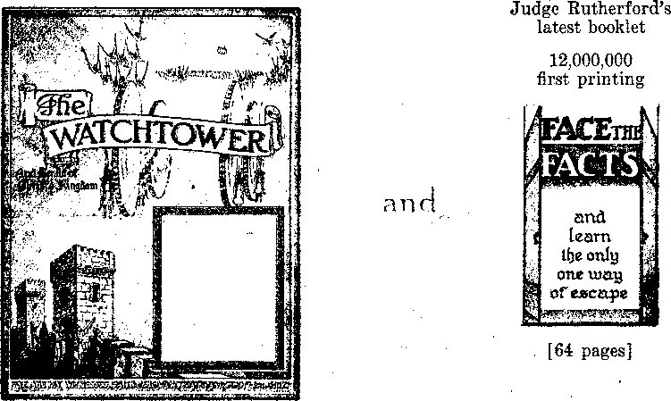

Contents
Is the Roman Catholic Press Trustworthy?
A Little on Child Training
Don’t Be Too Severe
Teach the Truth in the Home
The New Government
“Catholic Europe Predicted”
Anecdotes from Belgium
New York
Anarchy in Brooklyn Mr. Hague Wants a Trip South Africa
Counsel by J. F. Rutherford
Politics
One Million Victims
South America
Under the Totalitarian Flag
State Aid for Religion
Surrender to the Pope
Knights of Columbus
Public Admission of Hypocrisy
The Ambushment of the American Republic
American Public School System
Pastoral Letter on Teaching Democracy ■=., Notice the Ineffable Conceit
What Is Back of All This?
British Comment “Freethinkers”
Forestry
3
6
14
15
8
8
9
11
11
12
13
17
17
18
19
20
20
21
22
23
24
24
I5
26
27
28
28
31
Published every other Wednesday by
THE GOLDEN AGE PUBLISHING COMPANY, INC.
117 Adams St., Brooklyn, N. Y., U. S. A.
President Clayton J. Woodworth
Vice-President Nathan H. Knorr
■ Secretary and Treasurer Charles E. Wagner
Five Cents a Copy
, JI a year In the United States
51.25 to Canada and all other countries
NOTICE TO SUBSCRIBERS
Remittances: For your own safety, remit by postal or express money order. When coin or currency is lost In the ordinary malls, there is no redress. Remittances from countries other than those named below may be made to the Brooklyn office, but only by International postal money order.
Receipt of a new or renewal subscription will be acknowledged only when requested. Notice of Expiration is sent with the Journal one month before subscription expires. Please renew promptly to avoid loss of copies. Send change of address direct to us rather than to the post office. Your request should reach us at least two weeks before the date of Issue with which it Is to take . effect. Send your old as well as the new address. Copies will not be forwarded by the post office to your new address unless extra postage is provided by you.
Published also in Bohemian, Danish, Dutch, frinnish, French, German, Greek, Japanese, Norwegian, Polish, Portuguese dpamsh Swedish Hungarian Ukrainian
OFFICES FOR OTHER COUNTRIES
England 34 Craven Terrace, London. W. 2
Canada 40 Irwin Avenue. Toronto 5, Ontario Australia 7 Beresford Road. Strathfleld, N.S.W. South Africa 623 Boston Uouse, Cape Town
Entered as second-class matter at Brooklyn, N. Y., under the Act of March 3. 1879.
Winning Answer
An enterprising Florida newspaper jBgoJ offered a year’s subscription for the best answer to this question, “Why is a woman like a newspaper ?” Here iiiiKa2A<3are some of the answers:
“Because they are thinner now than they used to be.”
“Because they are well worth looking over.” “Because they carry the news wkferever they go.”
But the one to win the subscription was this: “Because every man should have one of his own and not run after his neighbor’s.”—Ex.
Troubles with Wives ’
A Southern editor said that a man out west got himself into trouble by marrying two wives.
A Western editor replied that a good many men in the South have done the same thing by marrying one.
A Northern editor reports that quite a number of his acquaintances found trouble by merely promising to’ marry, without going any farther.—Labor.
A Diplomat! A Politician!
Charlie Miller, news editor of the Peru (Ill.) News-Herald, tells of a man who astonished the want-ad clerk of his newspaper recently by placing an ad offering $50 reward for the return of his wife’s pet eat.
“Isn’t that a high reward for a eat?” asked the ad taker.
“Not in this case,” said the man, “I drowned the cat.”—American Guardian.
A Problem
“Daddy,” said a little girl, “if a doctor doctored another doctor, would the doctor doing the doctoring doctor the other doctor in the way the doctored doctor wanted to be doctored; or would the doctor doing the doctoring doctor the other doctor in his own way ?”— Labor.
A Lon j Wait
Doctor, to patients in reception room :“Well, who has been waiting the longest?”
Man, presenting bill: “I think I have, Doctor, I delivered your suit three years ago.”
CONSOLATION
“And in His name shall the nations hope.”—Matthew 12:21, A.R.V.
Volume XX Brooklyn, N. Y., Wednesday, January 11, 1939
Number 504
A FACT that is frequently overlooked by honest persons, and one that should never be forgotten, is that the Roman Catholic Church, as a church, condones lying (as well as theft and murder) by the casuistry with which it contravenes the Divine law. The following extract from one of the most honored “saints”- in the Roman Church, shows that lying has been reduced to a fine art in that iniquitous organization, which is now trying to subject England to its rule by means of Fascistic subterfuges. ’
If any, either alone or before others, whether asked or of his own accord, or for the purpose of sport, or for any other object, swears that he has not done something else which he has done, or in a different way from that in which he has done it, or any other truth that is added, he does not really lie, nor is he perjured.—Pope Innocent XI.
Another “saint”, whose writings are still studied and followed in the Roman Catholic organization, states:
When a crime has been well concealed, the witness and even the criminal, may, and even must, swear that the erime has never been committed. .. , .-We may be allowed to conceal the truth, or disguise it under ambiguous or equivocal words or signs, for a just cause, and where there is no necessity to confess the truth.—“Saint” Liguori.
Such being the case, it is easy to see how little confidence can be placed in what is stated in Roman Catholic newspapers or periodicals. The excuse of “a just cause” can be so readily advanced. For instance, the advantage of the church itself is always considered a just cause, and,’in any event, the doing of evil that good may come (to the system) is clearly endorsed by such methods as the foregoing quotations not merely suggest, but endorse.
The complete absence of principle or of any stable foundation for an honorable course of action is evident from the quotations presented, which are only a drop in the bucket when compared with the literature that eluci-
JANUARY 11, 1939 dates such rules and is still current in the Roman Catholic Church.
Being thus instructed, it was not strange that the London Catholic Herald should produce an article such as the following, purporting to come from their own correspondent in New York. '
Cut Off !
America Declines to Hear “Jehovah’s” Chief “Witness”
From Our Ou:n Correspondent
New York.
The anti - religious tirade delivered by Judge Rutherford at the London (Eng.) Albert Hall, and broadcast to America, was cut short by American radio stations, whose directors then apologised to radio audiences for as much of the speech as had been heard.
Radio spokesmen explained that they had no knowledge of the nature of the speech, but cut it as soon as its anti-religious venom became evident. Complaints against the broadcast have been forwarded to the Federal Communications Commission.
In some places where meetings had been arranged to hear the broadcast, lessees broke contracts and closed their halls to the free-th inking or atheist audiences. In Pittsburgh, Shriners who had leased their hah to the “Jehovah’s Witnesses” (Rutherford ites) explained to the Pittsburgh Catholic that they would not have leased the hall if they had known the purport of the meeting, and added the assurance that precautions would be.-taken in the future.
COULD NOT USE PUBLIC HALLS
All New Orleans radio stations declined to carry the speech, while stations in Colorado and Oklahoma cut off the speech and apologised to their listeners. In Chicago and New Orleans three-day conventions of the Watch Tower Society, also Ruth-erfordites, were refused permission to use public halls.
In some places American Legionnaires and other patriotic societies protested against the broadcast because of Rutherford’s subversive doctrines on saluting the flag and war service.
3
The Catholic Press is initiating a protest against the proposal to hold the next Godless Congress in New York City.
Did not the London Catholic Herald realize that intelligent readers would see the contradiction between the first and fourth paragraphs of their story7? and were they not aware that there was not the least connection between the story as a whole and the last- paragraph, which unquestionably was added to convey the idea, at least to the average uncritical Catholic reader, that Jehovah’s witnesses were a Godless group?
Were they so eager to discredit Judge Ruth-. erford and Jehovah’s witnesses generally that they failed to realize that it is generally difficult to write convincing fiction, especially when one is heated up over something and trying to get the other fellow in bad? Have not Catholic editors yet learned that, even if only from considerations of policy, it is best to be honest?
Did the Roman Catholic news service that produced this poor piece of propaganda forget that many thousands of persons, intelligent persons, having heard the lecture, or knowing others who had heard it, and millions more who had the books written by Judge Rutherford, would know they were lying? .
Also, had the Roman Catholic news service overlooked the fact that while Jehovah’s witnesses do not resort to the use of carnal weapons, or of the Devil’s tactics of lying and boycott, they do make effective use of every legal and just means within their reach to defend the truth ?
Whatever may have been the cause of the deliberate misrepresentation of truth in evidence in the dispatch purporting to represent happenings in another country, the London Catholic Heraid stands condemned as an untrustworthy source of news and a prejudiced and biased interpreter of such news.
The Catholic pre&s in general has not impressed the public, not even the professed Roman Catholic public, as being worth while or reliable. It is too obviously an instrument in the hands of the Roman Catholic Hierarchy to further its own interests, and that at the expense of the people and their just rights. The Roman Catholic Press has the right to give a disproportionate amount of space to matters Catholic, but it does not have the right, in the eyes of honest persons, to misrepresent the truth with regard to any matter, regardless of its personal prejudices.
The pope says that the Catholic press is his very own voice; and if that is true, he must have Ananias backed off the boards. Judge Rutherford and the Watch Tower Bible and Tract Society have been lied about in the Catholic papers in the past until the Hierarchy made the great mistake of jumping to the conclusion that this could go on indefinitely. .
The London Catholic Herald, noticing that in past issues of American Catholic papers almost anything against Judge Rutherford and the Society went unpunished, tried the same stunt in London and was promptly sued for $100,000 damages. British courts are not yet as afraid of the Hierarchy as they are in many parts of America, and so the Herald made a front-page apology in its issue of November 25, 1938, and paid the costs and the fees Qf the London solicitors of the Society. The apology was as follows;
Judge Rutherford’s Broadcast '
In our issue of October 14 it was reported that the speech by Judge Rutherford delivered at the Albert Hall, London, on September 11, was ent short by American radio stations, whose, directors then apologised to radio audiences for as much of the speech as had been heard. It was also stated in our report that ail New Orleans radio stations declined to carry the speech.
As a result of subsequent enquiries we have now ascertained that the speech was treated in this way only by the three circuits, Oklahoma City, Denver and Colorado Springs, whereas 118 stations on other circuits broadcast the speech in its entirety without interruption. ,
We have also been informed that none of the New Orleans stations were approached, or engaged, to earry the speech, so no question of their declining to do so ever arose.
It has also been represented to us that certain expressions were used in the same report which might appear to convey the imputation that Judge Rutherford is an advocate or preacher of atheistic views. The report was not intended to eonvey that impression, and we regret any misunderstanding caused by it. ’
Further details regarding the incident are available in a statement to the British public by the London office of the Watch Tower Bible and Tract Society, under the heading, “Roman Catholics Anxious to Gag Judge Rutherford; Catholic Herald, London, Published Lying Report; Afraid of the Facts!” Every person who believes in publishing the truth on all
■ subjects and punishing those who willfully and maliciously lie, is bound to be interested. The statement follows:
On Sunday, September 11, Judge Rutherford delivered his great speech “Face the Facts” to a vast audience of 10,000 at the Royal Albert Hall in London. This lecture was of such importance that it was transmitted at the same time by radio beam to other audiences in more than 40 cities in the United States, Canada, Australia, New Zealand and Tasmania, as well as relayed by direct wire to an aggregate audience of 25,000 assembled in Belfast, Birmingham, Bristol, Glasgow, Leeds, Liverpool, Manchester, Newcastle - on - Tyne and Swansea, Simultaneously it was broadcast by a ■transcontinental chain of 118 American radio stations, Over this entire world-wide network, which was one of the greatest in history, Judge Rutherford revealed astounding facts which the Roman Catholic Hierarchy is afraid to have the people know. The Catholic Press in America and Britain have openly published falsehoods to further prevent the people from gaining the information given in “Face the Facts”,
In its issue of October 14, the Catholic lieraid, London, published a report, which ran into about half a column and was printed in bold type, headed “Cut Off! America Declines to Hear ‘Jehovah’s’ Chief “Witness’” and proceeds to state that the speech (described in the said report as an “anti-religious tirade”) “was cut short by American radio stations, whose directors then apologised to radio audiences for as much of the speech as had been heard”. The report also stated that all New Orleans radio stations declined to carry the speech.
The report clearly implied that all or almost all American radio stations cut off Judge Rutherford’s speech as being of a nature unfit and improper for the public to hear, whereas, in fact, as has been ascertained in New York, 118 radio stations throughout the United States broadcast the entire speech as relayed from the Royal Albert Hall, London, and without interruption, and in New Orleans not a single radio station was approached or engaged for the broadcast, so that the statement that “all New Orleans stations declined to carry this speech” is entirely untrue.
The said misrepresentations with their obvious implication as above stated were serious enough, but there were two further sentences in their report which arc infinitely more objectionable and constituted a serious libel upon Judge Rutherford and a great reproach upon Jehovah’s witnesses who compose the Watch Tower Bible and Tract Society, These statements were, “In some places where meetings had been arranged to hear the broadcast lessees broke contracts and closed their halls to the freethinking or atheist audiences” and “The Catholic Press is initiating a protest against the proposal to hold the next Godless Congress in New JANUA'RY 11, 1939
York City”, Every honest-minded person knows full well that Judge Rutherford and Jehovah’s witnesses are not freethinkers, atheists, or Godless, but are servants of Almighty God and preachers of the Gospel of Jehovah God’s Kingdom, Thus Judge Rutherford was seriously defamed in his good name and reputation by the suggestion that he is an advocate of atheism and one who holds or is connected with Godless Congresses,
The Catholic Herald were advised by the London solicitors of the Watch Tower Bible and Tract Society that they were prepared to issue proceedings against them for libel unless they should publish a retraction and pay for legal costs incurred. The Catholic Herald, knowing their statements were untrue, have published such retraction and have paid the legal costs as demanded. This open admission is a striking comment on what Judge Rutherford had to say at the Royal Albert Hall.
Judge Rutherford pointed out that in opposition to God’s Kingdom the Devil has brought forth the corporate state or totalitarian government ruled by visible and arbitrary men with the Roman Catholic, Hierarchy as its spiritual overlord working hand in glove with such men as Hitler and Mussolini, The ambition of this crowd is to rule the world. There is now a determined effort on the part of this same crowd to grab control of Britain and America and take away all the liberties of the people. The Roman Catholic Hierarchy, therefore, is in fact a political institution’ bent on taking away the liberties of the people and ruling arbitrarily. This operation they are carrying on under the cl dak of religion because the people have been led to believe all these years that religion and Christianity are one and the same. In fact the Catholics call theirs the Christian religion and the Catholic Church The Church, Judge Rutherford has no objection to their calling it what they please; however, the point is this: Putting asifle the question of the differences between those who study the Bible, no institution has any right or privilege to operate under the pretext of being the servants of God and use that cloak to destroy the liberties of the people.
A ma jor portion of the public press of Britain and America are aware of the facts herein stated, but they are afraid of the Catholic organization and afraid to tell the truth. The Catholic organization is afraid to come in the open and discuss these matters. Judge Rutherford has openly challenged the Hierarchy for several years to deny •what he has stated and do it publicly, and they refuse. And why? Not because they have not many able men to represent them, but they well know that they have not a leg to stand on when it comes to answering the charge that they are in the game for political reasons.
All honest persons should at once investigate these facts together with the prophecies now being, revealed in God’s AV ord, the Bible. To thus aid the people Judge Rutherford’s leeture “Face the Facts” has been recorded on gramophone dises in its entirety as broadcast from the Royal Albert Hall. These lectures are now being reproduced throughout Britain in public halls where a multi- ■ tn de of others who failed to hear the first lecture may now hear it and benefit by its information. Provisions have also been made by Jehovah’s witnesses to reproduce this lecture in your own home without any obligation whatsoever to you.
To the foregoing circular was attached a coupon by means of which the public could obtain free literature in further refutation of the Herald’s falsehoods.
The Catholic Herald incident has once more brought to the fore the fact that the Roman Catholic Press cannot be depended upon and that any statement made with respect to individuals and organizations that disagree with them is certain to be untruthful.
'd CkSlL' THERE are some 800,000,000 boys »/? and girls in the world, each one rSrffl J with some 42 traits all in process of JUHA $ development; so that makes around ’ ’ 33,600,000,000 problems for discus
sion in this brief article. Don't expect too much.
The training of a child begins before it is born. If the parents love God supremely, and love and appreciate each other in large degree, it will show in the child. The mother has much to do in determining what the child will be. As a mother thinketh in her heart, so is her child in fact.
If your child is normal, thank God. It is a miracle for which to be grateful forever to the Giver of all life. But if the child is not normal, it is still yours. It may be partially deaf, able to hear you well only by watching your lips. It may have chorea, involuntary twitching of the muscles. It may have a speech handicap, or any of a score of other blemishes, but still h&ve wrapped up in its little frame tremendous possibilities.
When the child is very young, try to avoid having it kissed. One smack on the lips from an old grandmother that smoked a pipe killed one newborn little one. It did not have enough vitality to overcome the nicotine. Many a girl has gone wrong because her parents did not steer her away from too much kissing.
When the child is very young, do not leave within its reach any small objects that are easy for it to put in its mouth. Many fine children have lost their lives on this score. Dress the child sufficiently, but do not bundle it so completely that it is deprived of air and sunshine, and has too much of perspiration and discomfort.
Don’t Make Too Much of Clothing
Don’t think it is the clothing they wear that makes your children attractive. It is what they say and do, anef the way they say it and do it,-that counts. Children are made to enjoy wind and snow and rain. Their clothing need not be expensive. A flour sack can be dyed and made into an attractive garment. Nobody should wear clothing that is too tight.
Your child must have a good body; therefore physical training is all right in its place. But this can be overdone. At present German schools are going to the greatest extremes, because, in the eyes of German officialdom, all children were born to die for Germany.
Children are developed by play. That is a child’s business. In play it learns to use its hands, gains balance, learns the meaning of success and failure, learns to concentrate and to use judgment, patience and self-control. In playing together, children involuntarily teach these things to one another.
Chicago children decided to burn their warlike toys. It was a splendid decision. The making of toy pistols and cartridge belts should be ' stopped. The movies have done much to popularize gun-play. A child destructive of its toys should be given building blocks. A child that hammers furniture should be provided with wood, hammer and nails and shown how to make a box for its toys or some other useful article.
Children should not be jostled, rocked or shaken. They need to be kept quiet and warm. Their toys are their personal property and should be respected as such. They should not be bathed in water too hot or too cold, nor forced into the bath. Floating toys enable them to enjoy what at first they sometimes fear. Cleanliness does not demand powders.
A child of two years should be able to play for two hours at a time all by itself. Children of five years have a sense of touch superior to that of adults, but do not see as well.
What Parents HTs/t
Parents wish their children to be dependable. When they make promises, see that they live up to them. Teach them to avoid borrowing. Teach them to speak of the absent as if they were present. Teach them to be silent under injustice. It makes for moral courage. Joseph spared Potiphar, but history did not spare his wife.
Parents wish their children to be something besides manikins. Therefore, they should be early taught to be kind, really kind—not condescending—to those less fortunate than themselves in physical appearance, manners, clothing and education.
Parents wish their children to learn the value of money. The child can be given an allowance, w'ith the distinct understanding that when that is spent there will be no more until the next payday. As the child grows older the budget can be increased, to take in all his personal expenses, as for clothing. He must learn to buy for himself sometime; the sooner, the better.
When a child begins to touch everything, its senses are developing. When it asks hundreds of questions, it is learning rapidly. When it talks like a streak, it is learning the use of language. When a child is reading or engaged in some other definite occupation which, at the moment, to the child, seems important, the parent should avoid breaking the spell suddenly, and thus help the child to learn to concentrate. -
Some Things to Discourage
If a parent lies to a child, or in the presence of a child, the child will lie to its parents or to other children. It is lots of fun to tell the truth.
A wise mother broke her child of whining by establishing a erying chair in a corner of the sewing room. There the child could go and cry any time, and nobody would pay any attention to it. It brought good results.
Left-handed children should be allowed to develop according to their nature. Forcing them to bo right-handed causes stammering, lying and inferiority complex.
Parents who hire their children to work for •them develop selfishness in the little one. The child should be encouraged to do things for the joy of being useful and accomplishing something.
If parents smoke and drink they may expect their little ones to smoke and drink. If
JANUARY 11, 1933
they curse, they may expect their children to curse. ,
Parents should teach their children that policemen, teachers, street cleaners and other servants of the public are their protectors and friends. Nobody should ever frighten a little child, or irritate him.
If a parent bullies a child the child will bully some other child. Nobody likes to be bullied.
If a child obviously is overdoing the question end, the parent may sometimes count er by repeating the question and asking the child to answer it, and oftentimes the result will be intensely interesting.
If there is any show on earth as interesting as a child, name it.
Life /« Activity
The excitement of life consists in doing something. A child of three or four years can dress itself, and should. It can spread a bed at 4, and should. Lt ean brush its own teeth, and should. It ean manipulate a washrag, and should. It can wipe the spoons, and should. A little later it ean pick up and hang up’the things in the sleeping room, open the windows and air the bedding. A boy can learn to cook as well as a girl, and should learn to do it. A boy can wipe up a kitchen floor as well as his mother, and should. These things can be worked into a boy’s life without making of him either a sissy or a slave. It is in distributing life’s activities that the parent shows her skill.
By the time a boy has wiped up the kitchen floor for his mother a few times, he will be a better boy every way and will have learned to appreciate his parents more than one who has not done so. A parent should never let a child see him do, over any task which the child has done and manifestly tried to do right. No children are perfect, even at 70 years of age. A child should not be asked to do things which are beyond his powers or which are of no value to him or to anybody else. ■
Encourage the children to spend time in the publie libraries. It is astonishing how rapidly they learn valuable and / Useful things there, and they can be encouraged to come home and tell what they learn, and should.
Don’t shout at a child, or. he will be shouting back. Speak kindly, and he will speak kindly! Be orderly, hnd he will be orderly.
(Continued on page 14)
7
♦ Alfred D. Charles, editorial writer for the Baltimore Evening Sun, discussing the exclusion of the Ludke children from the public schools of Oxon Hill, Maryland, because they conscientiously refused to salute the flag, thinks it would be really funny for the Prince Georges County' school board to come into court and try to prove that— blowing six children of tender age to attend public school without saluting the flag is a peril to the public safety, health or morals, or threatens the property or personal rights of the Prince Georges County citizenry. That would be something, indeed, for kids 9, 10, 11, 13, 14 and 16 years old to do.
Leicester, England, Kingdom hall
♦ Woodworth Mills,
a young Jonadab of Trinidad, British West Indies, sends in a clipping having reference to a front-page scarchead in a Vienna paper entitled "Catholic Europe Predicted”. Sure enough! Why- not? Mills docs not like the idea. He says that the modern Philistines are a “bunch of highwaymen in black nightgowns, will be completely destroyed at Armageddon, and Jehovah’s name will be completely vindicated”. They have trouble in getting any Consolation down there, on account of the foolish ban on Christian literature. He says, ".Do not forget those caricatures; they arc; always appreciated!”
♦ If old age is creeping slowly overturn, and you are not ablc*to read the signs on above building, you will first take note that the sign on the hedge is “East Park Road”, the first sign on the building is “Leicester company of Jehovah’s witnesses”, and the second one reads, “Kingdom Hall Assembly for Bible study of Jehovah’s purposes.” Leicester, England, one of the most enlightened communities in Britain, was the first city in the English-speaking world to throw off the superstition that inoculation with cowpox is a blessing to humanity. Anybody who wishes to be vaccinated in Leicester may have it done at his own expense, but it is not compulsory for anybody, and the city never has any cases of smallpox. The city is so neat and clean and sanitary that it has no fears of a dirt disease transmitted by bedbug bites.
♦ On page 9 is an Indian pioneer witnessing to a group of Catholics-all of them Catholics in a priest-ridden town! The man standing with the books Enemies and Riches in his hand is editor of a local paper whose interest was deepened by a request from some of the local “goats” to publish an attack against the truth, which he declined to do. The one on the extreme right, sitting, is now- a reader of Consolation, and each of the others is showing interest in the message of the Kingdom. Pioneer Daniel is seen standing on the right of the group.
♦ VanderBeek, my companion in the witness wrork [in India], “laid down his sword” last month just as the testimony- campaign was starting ; he was game to the last. Our last years’ touring and subsequent work proved a strain on his heart, and when he landed up with pneumonia (which afterward became double) and also enteric or (yphoid, he was handicapped in fighting the illness. He died on Thursday (April 14) 31101110011. I buried him on Friday morning and kept the Memorial-[of Christ’s death] alone in the evening. It was very poignant. But we do not mourn ; for we have the confidence that he was faithful to Jehovah, and ‘Jehovah preserves the faithful’, and whether earthly or heavenly, he will live again. He was a great fighter, steadfast and reliable, and a true companion in the Lord’s work. I mentioned him when writing you from Karachi.—G. B. Garrard, Pioneer.
■»
Anecdotes from Belgium
♦ In the province of Hainaut several people, formerly Catholics, have recently taken their stand for the Lord and His kingdom, according to a pioneer report; and the way they threw themselves into the service shows the zeal peculiar to the Lord’s house. A farmer with a large holding of fertile acres was cranking his car early one morning in preparation for a trip, and just as he got the engine staffed a woman, one of Jehovah’s witnesses, accosted him with a cheery greeting, and displayed some of the explanations of the Bible by Judge Ruther-
* ' ford. Being a kindly man and impressed with the enthusiasm and sincerity of the woman, and although in a hurry to depart, he leaned from his ear window and contributed for several books. Something in one book impressed him, and, without stopping his motor, he began read
Witnessing to a Catholic group in India— who all subsequently became interested in the truth
ing. He read on. Then something happened. His motor stopped and he realized his petrol or gasoline had completely burned up while his thoughts had been deep in the book. He had neared the end of the book.
The truth infused him with a fiery energy. He remembered then that he had on two other occasions got books from Jehovah’s witnesses, thinking it a good work, but in each ease he had put them in a drawer and never read them. Now he got them out. All the members of a rather large family connection were told of the good news; but all but one brother preferred the “traditions of their fathers”, in this - ease Catholicism. The farmer and his brother left the place in the midst of harvest season last year to go to the Paris convention. There he received food for the mind and came home refreshed to assist in organizing the service in his little village of La Louviere. The milking and other chores are now changed about JANUARY 11, 1939 to permit of the more important duty of declaring the Lord’s message.
In the near-by village of La Buissiere a pioneer called at a woman’s door. As soon as she saw a publication she asked if he was from the "Watch Tower. When he told that he was, she said, “I have been waiting for you.” The pioneer did not know at first what she meant, as he had never seen the woman before, but she explained that she meant someone from the Watch Tower, and then brought out several worn copies of Watch Tower booklets. She got all the books she could obtain. Since then others have called on her from time to time to assist her in the service, and she has related facts well showing how religionists hate God’s Word of Truth. Hirst, her husband, who is the “principal of the flock”, and largest financial pillar of the Roman Catholic church, forbade her to go out with the books; her mother turned against her and, emphasizing her Catholic conviction,, threatened to expel her from the house if she spoke further about the Bible. She attended a convention later, despite all protest. On her returning her husband met her at the door with fists doubled up and smashed her to the floor as soon as she entered. Not defiantly, but firmly, she got up from the floor and departed to the village to spend four hours in house-to-house service with the King’s message. Thus it is seen that a weak woman with God’s power behind her ean meet and surmount every obstacle.
One day a man with butcher’s apron on entered the Brussels office of the Watch Tower. He assured himself it was the place he wanted, then he threw upon the branch servant’s desk 700 francs in small coins, requesting some publications. He left without further comment, but returned a week later in the samegarb, this time with a cut of meat under his arm. He made the office a gift of the meat and then threw another 700 francs on the desk for more literature. Again he left without further comment. Ten days elapsed and then he came in with 1500 francs, mostly in 5-centime pieces (one of which coin is worth about one-sixth of an American penny) and announced to the now astonished servant: ‘'There are fifteen hundred people in the village I live in. and I intend to see that every one in the place receives a copy of one of your booklets and at my expense/’ He left with a tremendous package of books, beaming in anticipation of doing such an act of good will.
♦ Keith got run out yesterday and today. Both times there were two others who took bis side and are now coming to the Model Study. Today he went into a garage and got run out. The garageman was so vicious that Keith felt sure he would get a beating, but the other two men stood up for him and the garageman ran them out. They came out in a hurry, got in their ear and drove off; I think they got fired. The people here have the courage to stand up for what they think is right, no matter what others think.
Thurman went to a business house and talked to a young man who appeared to be quite interested, He said he had no money with him, and invited Thurman up to his house. He told Thurman he and his family were Catholics.
«When Thurman got to his door his voice and demeanor were completely transformed and he said in a commanding voice, “Stand right here.” Thurman stood there and heard shells going into a gun. His first thought was to run, but he decided it would do no good; so he stood and wa^ed. The man came to the door with a thirty-thirty rille, put it in his ribs and told him to move down the road fast. Thurman turned and walked off with the man shouting he would shoot if he dtd not hurry. The neighbors wanted to have the man arrested, but Thurman would not consent.*—Ronald E. Pierce, Montana.
•[Thurman should have sworn out a warrant against him immediately.—
(To continuetl)
Judge Rutherford’s platform at Sydney, Australia, convention
♦ The anarchy in Brooklyn, involving the theft by Police Lieutenant Behan, and eight accessories, of 7,200 police records from the police headquarters, brings prominently to light the names of Geoghan, Bevan, Cassidy and Lynch. After four days of waiting for the spirit to. move him, Patrolman Edward J. Lawlor admitted that he knew it was Police Lieutenant Cuthbert J. Behan who stole the records. He said Behan told him he had to make away with the records, for otherwise, if the threatened inspection occurred, they would all be sent to jail.
♦ In the past seventeen years millions of young trees were planted in New York state, and today great numbers of these are ten to twelve feet high. Excellent results are already visible. The shady ground under these young trees is soaking up moisture and feeding it to the streams gradually. Floods are less disastrous. Streams which a few years ago were dry in summer are now running steadily, the water is cooler, the fishing is better, and there are fewer forest fires.
♦ In New York city there are more than 400,000 young men and women between the ages of 16 and 24 (almost half the population in that group) that are roaming the streets vainly looking for work. Is it any wonder that there is such a high percentage of delinquency?
♦ New York keeps quite well. It ought to. Last year it ate 196,448 earloads of fruit and vegetables, 20,000 pounds to the carload. That figures up to 3,928,960,000 pounds of fruit and vegetables eaten in New York city in one year; and if that would not keep them 'well, what -would ?
♦ More than 22 percent of the 941,789 arrests by the New York Police Department during 1937 were of boys 17 years old or younger. The majority of the boys were first offenders. The arrests were 50 a year for every officer on duty. .
JANUARY 11, 1939
♦ Thirty times in less than a year Ruth Wheeler, four years of age, of Buffalo, New York, has run away from home, stowed herself away in buses and wound up in various cities and towns in Canada and western New York. Spankings are as ineffective as coaxing, and the parents and the police admit being stumped by her wanderlust. Last summer the In ter borough Rapid Transit Company supplied 145,516 free rides to children from the tenement districts of Manhattan and Bronx to enable them to visit various city parks.
♦ A widow who lives in Brooklyn on a $30-a-month federal pension has received two letters from the government recently; one informing her that a warship would be named after her husband, Lieutenant Mons Monsson, the other notifying her that her home would be sold at auction because of a mortgage made by the Home Owners Loan Corporation.—The Arbitrator.
Warned Against Lowering Shades
♦ The Albany, N. Y., chief of police warns vacationists against pulling shades all the way down when they leave on their trips, and thus inviting burglars to come in and make themselves at home. Also, says Chief Smurl, stop deliveries of milk, papers and ice. He did not say how one eould put a stop to the delivery of A & P price lists and other similar exhibits.
♦ In testimony before the House Committee on un-American activities in Washington, Girolamo Valenti, chairman of the Italian AntiFascist Committee, produced books marked “Property of the New York Board of Education”, used in parochial schools in New York city, containing pro-Faseist propaganda.
♦ Seven new varieties of apple, four new kinds of grape, and one new kind each of pear, eherry and strawberry, have been named recently by the Fruit Testing Association, Geneva, New York. The Jonadabs are going to have a good time in the world that is coming around the corner, and don’t you doubt it.
Mr. Hague Wants a Trip
Unwittingly, Mayor Hague of Jer-. sey City lias recommended that he be sent by the people of the Unit-, ed States to a concentration camp --•£i which he proposes to have established somewhere in Alaska, [Maybe the mayor did not know how to pronounce Alcatraz..— Ed.] To be sure, Ills Honor did not mean to nominate himself for an excursion to the Far North, but if he insists upon the Federal Government’s following a course of procedure which he recommends, he will be ensnared by it.
On the witness stand in the United States District Court at Jersey City last week, Mayor Hague declared:
I believe that anyone who comes here and is discovered unpleased with the methods of our country and our government and feel it is necessary to set themselves up as objectors to the form of government that we enjoy here and that this country is apparently not pleasing to them should be driven back— not go back—be driven back.
Day Dream Nc>. 174,093--The welcoming committee meets the mayor
Asked what should be done with native citizens of this country who object to the methods of our government under certain conditions, Mr. Hague blandly replied:
I think that we ought to establish a camp in Alaska and house them there and keep them away from the American people, if they don’t believe in our form of government. I think there should be a remedy for that.
—Fort Wayne News Sentinel.
♦ Mayor Hague, ignorant, and candid in his stupidity, brutal and proud of it, the typical poolroom Nazi, is America’s first flower of what may become a national pest — the denial of civil liberties and constitutional rights. Hague is for free speech, all right, but not for free speech about things he dislikes. When he dislikes anything, it is Communism, which he thinks everybody else dislikes. Thus, he becomes judge and jury and prosecutor all in one, the perfect Nazi storm trooper.
At the other end of the pole is Franklin Roosevelt: erudite, sophisticated, amiable.,'gracious and felicitously, suavely but deeply intolerant of opposition. He is doing to the serial or who opposed him in his court fight what Hague is doing to the Communists. The president is not beating up the senators; he’s not giving them the bum’s rush to the Jersey City ferry, not pelting them with eggs. He is merely trying to deprive them of their jobs because they spoke their minds. He feels toward the recalcitrant senators as Hague feels toward the Communists. — William Allen White, in Emporia Gazette.
♦ An Essex, New Jersey, grand jury convicted itself of incompetence when, in one breath, it found no cause for indictment of the five ex-convicts and others who rotten-egged Norman Thomas at Newark and pulled his platform from under li im while eleven policemen stood helpless. One reason why the grand jury did nothing but feebly “uphold” free speech was that the plot to prevent Thomas from speaking was known by it to have been formed in the office of Assistant State Attorney William J. Egan, and it did not wish to offend Mr. Egan or others who, though paid to uphold law and order, are re<illy 'against both.
The harm that the officials of New Jersey have done to the cause of liberty in the earth is almost beyond calculation and is a cause of shame to every true American.
Erosion from Overstocking
♦ The “had lands” are on the march in South Africa. Men still in their prime recall how arid wastes and deep-cut dongas have taken the place of waving crops. They see a steady shrinking of the area left for agriculture and pasturage.
One of the primary causes of erosion in South Africa is the general tendency to take too much out of the land. Too many head of stock are grazed on limited areas, with the result that the grass becomes thinner and thinner until desert conditions begin to develop.
This is shown simply in a series of experiments carried out by ’a research department of the University of the AVitwitersrajid at Frankenwald, outside Johannesburg.. In the same stretch of veld, carrying identical grasses, there are half a dozen paddocks. The first has been closely grazed for one year, the second for two years, and so on to the sixth. The results are striking.
The plots grazed only for a year or two show little deterioration. In the plots grazed for five or six years there are great bald patches where the grass has given up the unequal struggle and the “'desert” is starting. This is the result of overgrazing or overstocking.-—London Sunday Times.
Nazis in South-West Africa
Ludwig Lore, in the New York Post, publishes a letter from a correspondent in South-West Africa, where, so it seems, the decent people have about given up all hope,
and expect nothing else than a Nazi triumph there shortly. A paragraph from the letter gives one some idea of what the triumph would bring:
■What goes on here among German racial comrades—as they like to call themselves—is unspeakable. It is a boundless disgrace when one considers the colored native population. During the past seven days our British court had to sit in judgment in the following cases: An employee of the firm of Th. & Co., Leipzig (Germany), acknowledged agents for the Nazi Party, stabs and kills his wife because after a dance she took a walk with another man. The twenty-four-year-old daughter of tile Nazi leader, K., impairs the morals of six Kaffir boys. A sixty-year-old farmer, former German captain, violates little Negro children. Another German farmer forces his native farmhands
to use a British flag in the outhouse. And while the court is about to find a verdict in the abovementioned ease trucks are parading around plastered with Nazi’ flags and slogans.
Just imagine: This place has#a population of 4b0 white people. Every child knows everything about everyone, and the Nazi papers which write so much about racial superiority would find ample material here. And we, the decent element, must stand for all this. It is like having mud thrown at you all the time and being unahle to do anything about it.
Wages of Native Workers
♦ The native has become poor to desperation ; the price of everything he buys—blankets, shoes, and clothing-—has been driven up nearly 50 percent, while during the same period. his wages, in spite .of South Africa’s spectacular prosperity, have not increased by a penny piece. Mr. Donald Molteno, M.P., has just returned from a tour in his constituency. (Incidentally British Liberals will be cheered by the spectacle of the nephew of Percy Molteno giving a great lead to Liberalism in South Africa.) During his tour Mr. Molteno found that agricultural workers on a 60-hour week were getting |d. Jone cent] an hour and a few mealies, no land for cultivation, no rations of meat (only “a bit occasionally”). This |d. an hour also gives the master the, right to call in the labor of wife and children. That ^d. ijn hour is £6 [$29.20] a year, out of which the wretched worker has to pay £1 a year poll tax! ■
The pass Jaws superimposed upon mass poverty have accentuated native discontent; thousands of natives are being hustled into prison for pass law offenses which, have not the remotest connection either with crime or even with any desire to commit an offense. At the same time the revenue benefits to the tune of £500,000 per annum. —- Sir John Harris, in Manchester Guardian.
Lightning Underground
♦ If you were down nearly a mile underground yon would think yourself quite safe from the effects of a thunderstorm on the surface, would you not'? Yet, at a Band mine, Johannesburg, South Africa, lightning struck a wire on the surface of the ground, and went down into the mine and detonated a quantity of dynamite, resulting in the death of eight miners and the injury of two more.
A
(Continued from page 7)
Don’t talk and talk and talk and talk and talk to a child. The child’s brain gets weary, and the effect is merely chatter.
If a child shows a penchant for pets, let him have them, feed them, wash them and look after them. The result is excellent for the child and" for the pet. If a child wants a camera, try to provide him with one and take an interest in what he does with it. A stamp collection is an interesting thing and need cost nothing but a little work. A garden is a delight. At the right age a bicycle is a gold mine. Tens of thousands of youth travel all over Europe on bicycle, at little cost to their parents, and with great benefit to the riders and to all who ever meet with them then or later, .
Don’t Be Too Severe
■ Don’t be too ibvere with children. Don’t scold them. Scolding is one of earth’s greatest cruelties. Children arc annoying. Maybe you were once, yourself. A questionnaire shows that children have 2,214 ways of annoying their parents. Nobody asked you to be a parent. Take your medicine like a man.
Mothers should not try to pass the buck by crying, flying into tantrums or frightening little ones by heart attacks, real or simulated. Your own mother did not do it. She stood by her guns. Do it yourself. Don’t magnify faults: you may have a few* yet, yourself.
Parents who wish their children to quarrel among themselves should quarrel with each other in front of them. Don’t snub a child. Don’t complain that they bother you. Don’t be cruel in punishment. Feeble-minded children are rarely ill-treated by their parents. This speaks well for parents. It shows that in many instances they do not realize their severity. Little folks have to learn, and their long-suffering parents are their natural teachers.
Don’t issue military commands. Nobody likes to be bossed. Don’t watch children critically while they are trying to do something. It takes time to train the hand and eye to do unusual things. Don’t expect little ones to jump at the sound of your voice. Don’t teach your children to hate you. ”
Don’t get a divorce. Your life partner may be as unfitted for society as you are yourself. Why shove off on somebody else a job you undertook ! The children that come from broken homes are less truthful, less courteous, less qualified for leadership than other children. A child with a good home feels that he is connected with a victorious fighting unit that will see its way through to the .finish.
Don’t show ingratitude to God and then wonder that your child shows ingratitude to you. Don’t lie to your child and expect him to tell you the truth. Don’t let the children think that they can get one parent on their side and thus gain a victory over the other.
Don’t be crooked and expect your child to be straight, ■
“Be Ye Perfect”
The Lord’s advice is, “Be ye perfect.” It is good advice. The only way anybody will ever arrive is to love the Creator with all the heart, mind, soul and strength, and the neighbor as oneself. So be perfect; but if you cannot be perfect, be as nearly perfect as you can. Live so that when your child is grown to maturity he will know you did the best you could to do right.
Sometimes a child will unintentionally break something. Maybe the best thing to do at such a time is to do nothing. The child is already punished. Why add to the child’s agony? If your child wants to know something and you do not know the answer, tell him so and then help him find the answer. If the Lord has been patient with you in your shortcomings, you can afford to be patient with the little folks that owe their lives to you. You can be reasonable and you can be gentle.
Don’t go too high in the air when a child disobeys you, until you find the reason for it. Maybe the reason was adequate. A good mother once made a mistake when she tried to make a child confess he had opened a letter he did not open. She wore out five whips all to no purpose, finally made a critical investigation through the postmaster, found she was wrong, and apologized, and she was forgiven. Reasonable punishment is accepted in a right spirit by reasonable children and actually does them good. “Whom the Lord loveth he chastcneth, and scourgeth every son whom he receiveth.”
Two children in Lowell, Massachusetts, unscrewed the valve caps of parked cars. They were taken to the police station, given five deflated tires and some little hand pumps and instructed to inflate. At five in the afternoon they had four tires in pretty good shape and were let off. They learned something.
A girl got to coming home later, as she grew older. This was reasonable, but an hour was fixed before which she had to be in. An
CONSOLATION alarm clock was set, and each night, when she comes in, the girl unsets the alarm. The arrangement works fine; The parents' retire at their usual hour.
Children brought up by nursemaids lack the courage to marry. They have been treated so painfully nice that they have been ruined for life. This often happens. No child can stand too much pampering. ,
Gifts from children should be appreciated and suitably acknowledged. Dates with children should be kept punctiliously. Children’s mistakes should be kept from other members of the family, as far as possible, but they should be commended for good deeds, and this may properly be done in the presence of others when occasion arises. Eternal, constant hammering is of no benefit to any.
A_child should know that his parents are his truest and best friends, and should feel that there is nothing in life, no matter how shameful or confidential, that cannot be safely talked over with father and mother, with the certainty that they will do the best they know to help.
Teach the Truth in the Home
Teach the truth in the home, because it is the truth, and because the honor of God’s name, and the proclamation of its coming vindication, is the greatest theme that can engage the attention of man.
Live the truth in the home, and outside the home. Let the children see for themselves that the service of the Most High God is the greatest honor that can come to any. If they wish to go out with you in the work, let them go, and have a share, but let it be on their own initiative, and because they wish to honor God’s name, and not because of what others may say or may do. ■
The pith of this article is in its second paragraph and in the two paragraphs next above this one. What is there set forth is clinched by the three contributed articles which follow:
Home Bible Study
About ten years ago the writer visited a lady on a ranch, many miles from town, who was bemoaning the fact that she was unable to send her four children, ranging in age from six to twelve years, to a Sunday school. We advised her to purchase The Harp of God and use it as a textbook, and to buy four eheap Bibles at the ten-eent store, so that each child would have a Bible, These are sold at 2()c to 40c in all dime stores. '
Then we advised her to read to the children a
page or two daily from The Harp, and have them find the scriptures quoted. In this way they would ■ become well acquainted with their Bible, and this would suggest to them questions for the mother to answer. •
This turned out so satisfactorily in this instance, where The Harp was read through three times, and was so highly pleasing to the mother, that I have advised this system of home Bible study to many others. I know of no better way to get the children interested in the Bible, and I find that they soon learn the location of all the books and where to find every passage, and appear to be delighted to have a part in such a study.—D. M. Gillies, Mona.
True Story of an Honest Girl
Her parents had a knowledge of the truth for years, witnessed to their friends and almost everyone else they met, yet they sent their little girl to three different Sunday schools, as they thought she ought to go somewhere else to get spiritual training, thinking their own training not sufficient, as they do not profess consecration to the Lord.
At first the little girl went to a Baptist Sunday school, being seven years of age at the time. After a few Sundays she would not go any more, saying they did not tell the truth as her mother and daddy believed and talked. So the parents switched her over to the Congregational church Sun'day school.
She did not stay there long either; she did not like their teaching, that when people die, whether they are children or adults, if they belong to some church, they go straight to heaven. She told the teacher, “No, the Bible doesn’t say that; only Jesus and the ‘little flock’ go to heaven, and all the rest of the people stay on the earth, if they love the Lord; the earth abideth for ever, and God will make it a beautiful place for us to live on, just like the garden of Eden, where Adam Jived.” The teacher opened her eyes wide and said, “Where did you hear all that, Elva?” and Elva told her it is all in the Bible and her mother taught it to her. The teacher got nervous and said, “Well, children, we will get back to the lesson.” This made Elva peeved, and when she got home she said to her mother, “She wouldn’t talk any more about it, Mother, and I don’t think she believed what I said, and it is true, and I don’t want to go there any more,” and she did not.
For the third time, she was sent to still another church, and did not like that one at all, because all they talked about was money, taking up collections for this and that, and the teacher did not like her because she disagreed about the soul. The teacher told the class that when one dies the soul goes right to heaven, and Elva could not let it pass without correction. She said, “Oh no, the Bible does not say that; we do not have sortls; each of us is a soul, and ‘the soul that, sinneth, it shall die’,”
The teacher said, "That will do, Elva; I am teaching this class, and you will get them all mixed up.” When Elva got home this time’she said to her mother, “I don’t want to go to any more churches;■for they don’t teach . the Bible”; and she did not go any more. .
Now Elva is in high school, goes out regularly in the service, no matter what the weather, and has taken her stand regarding the flag saluting. When asked by her teacher, and by the principal, why she refused to salute the flag, she said, "I cannot serve two gods,” and asked them to read Loyally, which she gave them for the purpose. Now she and another J on a dab, by arrangement with the principal, leave the roomquietly, one at a time, just before the flag saluting. When she goes out in the campaigns and in field service her mother is very uneasy until she returns, as she has been arrested twice with others, but she always says, "Don’t be alarmed, Mother, for God has, promised to protect us if we faithfully serve Him.” —Cornelia Brady. ■
Child Witnesses in Canal Zone
1 have six little children. The eldest is thirteen and the youngest not yet two. I have always prayed to Jehovah to teach me how to instruct them in the right way. My prayers are heard. I always take the second and third child with me when going out ■witnessing, and leave the eldest at home to take care of the three smaller ones. Recently the third child said,* "Mother, may I go out to do some witness work?” I replied with the query, "Will you go alone?” She said, “Yes!” but before the conversation was finished the second said, "I will go with her.” Within a few minutes they were ready for service, the boy with the phonograph and the girl with the discs and literature. They spent two hours in the service that day, leaving some literature with the people. Now for some five months they have continued in the service with great pleasure, spending many hours in it and leaving much literature with the people. The second is a fifth grade scholar in school, and crowded for time, but manages to get in considerable time in the w*ork and is on the job right now. The eldest alsojoins us in the glorious work when opportunity affords her, and the fourth one, who is now seven, desires to take up the witness work also. The stand that these children have taken has brought great joy and comfort to my heart.—Mrs. Eldred M. Coke, Canal Zone.
No other way in the world can the study of human nature be carried on to such great advantage as in door-to-door witness work. All kinds of people are mot, and. al] kinds of experiences are encountered. Blessings are of both kinds: the privilege of suffering something for the honor of God’s name, and the great joy pf finding here and there truth-hungry hearts famishing for just what you have.
A sweet smile disarms most grouches, and after a while there will be repartees that both parties to the encounter will enjoy. When a girl in Pittsburg, Kansas, was told in one home that the people had their own church and did not,, want anything to do with Jehovah, could you blame her for an inward smile? A bit later the same gir] had made the reasonable proposal that “Catholics can reason the same as anybody else”, and was nearly floored with the reply, “We don’t have any reason in our religion; we stick to the oldest ‘church’.”
When one religionist tried to poke fun at a boy witness by asking him, “What asylum did you come out of!” the boy promptly answered, “The one you are still in.”
A Concluding Word About Life
Teach your children and teach yourself the sanctity of life, not merely yours and theirs, and those of other humans, "but of the other works of God’s hands, objects of His love.
Nothing else ever published on the subject of the unnecessary destruction of fellow creatures can begin to compare with the leading article in The Watchtower for December 1, 1938. That article should be studied by everybody. It is Scriptural and reasonable from beginning to end. It will cause everybody, hereafter, to stop and think of their responsibility toward God before they take even the life of a sparrow,—Luke 12:6.
In this connection many will enjoy and appreciate and be profited by the following extract from a letter by Judge Rutherford to an inquirer on this subject. It makes the raising of animals for their pelts look like a pretty dangerous business in which to be engaged.
Answering your inquiry concerning the raising of wild animals unfit for food but used only for commercial purposes by killing them and selling their pelts, also the trapping of wild animals unfit for food by taking them and killing them to mU . their pelts. The Watchtower of December 1, paragraph 31, answers this question specifically. You must take the responsibility yourself as to how you apply it.
As to pork. This was declared “unclean to you”, meaning to the Jews, but, in my opinion, it does not apply generally, since the Jews were under a special covenant. Animals that are never fit for food and are taken merely for the purpose of selling their hides aiv a different matter entirely. Many people eat rabbits, and yet, to the Jews the rabbit was unclean. But surely no one would eat a polecat. Then why take its life, unless it is destroying your chickens, or doing other damage to your property?
THE pope has caused the world to be informed by radio from Vatican City that the Hierarchy is not interested in politics. The gullible people are expected to believe that announcement. Those who are awake know that the announcement is far from the truth. It was made with the manifest purpose of misleading the people while the Hierarchy moves forward to grab control of America. Note some of the facts:
A distinguished member of -the Hierarchy, named Cardinal Mundelein, advises and directs the persecution of Jehovah’s witnesses in America. Particularly was this recently done in Chicago and New Orleans and other places. Immediately thereafter he paid a visit to Mr. Roosevelt at the White House and rode about with the president, inspecting the war defenses and equipment of the United States while he was being exhibited by the president to the public. Of course, there was no political significance in that. Then the cardinal straightway went off to Vatican City to confer with the pope and with Pacelli. Have in mind that Pacelli visited Mr. Roosevelt just a few days before the presidential election of 1936, and the results showed that Catholics throughout the nation supported Mr. Roosevelt. Of course, there was no political significance in Pacelli’s visit to Washington,
Now the public press gives wide publication to the fact that Cardinal Mundelein goes to Vatican City with the blessing of the president and that the president- of the United States directs the Alneriean ambassador at Rome to meet the cardinal at Naples arid show him extraordinary honors and that the ambassador and the admiral of the American Mediterranean fleet, together with other American officials in Italy, entertain the cardinal with special honors and then conduct him in state to Rome on a special train. No .politics in that, of course, but, this has never been done by any other president of the United States and no other president has ever had the united support of the Vatican.
Why is the political head of the Democratic Party so directly concerned now about the visit of Cardinal Mundelein to the pope? Is there any political significance in this unusual attention being given by the president to this matter ? Remember that when first elected as president of the United States the public press announced that President Roosevelt had stated that an ambassador from the Vatican would be received at Washington as soon as the American people could be brought around to see the propriety of the same. No doubt Mr. Roosevelt now thinks he has induced the American people to see the necessity of the pope’s having a representative take a seat at the political table at Washington. A United Press dispatch of November 4 from Rome says: “Cardinal Mundelein will discuss the possibility of resumption -of diplomatic relations between the United States and the Vatican with Pope Pius and Cardinal Pacelli, secretary of state.” This dispatch further says: “It is not without significance that President Roosevelt seemed to have shown gr eat personal interest in the cardinal’s visit. The cardinal was a guest at the White House two weeks ago. Informants here said the cardinal -was believed to be in a position to convey the president’s ideas regarding early resumption of diplomatic relations with the Vatican and that he will discuss this matter with the pope.”
Mr. Roosevelt is an adroit politician. He loudly proclaims the necessity of religious freedom and states that everyone must be free to worship God according to the dictates of his own conscience, but at the same time he shows special honors to the worst enemy of Christianity that resides in America. Wonder why he does this, when such is beyond his duties as president of the American people? Is there any politics in it? Are the political affairs of America of particular interest to the pope? In this connection the following quotation from the book of an ex-Jesuit, Dr. Barrett, may enlighten some:
“A. phase of present-day Catholic Action is the urging of Catholics to throw themselves into politics. Catholic leaders do not advocate a separate Catholic party... . The church prefers to control legislators rather than parties and to avoid the odium and expense of running a distinct organization. But the church wants plenty of high offices for her children. .... The most sensational use of political power to force a church issue was that of Archbishop Curley when he threatened the present admin-
istration, and president Roosevelt in particular. When he took it upon himself to tell the president what he should do, and to threaten him with political extinction if he did otherwise, then Archbishop Curley was acting not merely as an ordinary politician but as a political dictator. ... It seems to be the policy of the church here to maintain intimate relations with politicians, and with state employees. As regards the latter, the police are first in favor with the church . . . and that having them in their thousands in hgr tow she can all the more easily command politicians.
“Who can place a limit to the Catholic objective in this country? . . . Never was the Catholic church in any country in the world since Christendom began so rich, so highly organized, so influential, so loyally soldiered by her subjects as she is today in the United States.”
The Protestants are sound asleep and do not sense the danger. Will the common people of America awaken to the great political menace of the Hierarchy and express themselves before all liberties guaranteed by the Constitution are taken away?
T HR statements that' Lusjkov, the Soviet Russian GPU-lcader in East Siberia, has given as to the “cleansing out” in Russia are fantastic. They are so exaggerated that they are hardly to be believed. As is well-known, he has, after bis escape to Japan, told that, including 10,000 higher military men, more than one million persons have fallen a victim to Stalin’s campaign. We are thunderstruck before these figures, says a Swedish country paper, Oslgcita-Tidningen, and continues:
“Should these figures be even approximately correct, they will upset all known records of revolution. They show in a flash quite another thing than the paradise that the Socialist state should become? They bear evidence of a hideous power, a terrible recklessness, a people in fetters. And one will ask:
“What really does occur in Soviet Russia?
“What does occur behind all those cold walls, behind that guise of human organization and human social upbuilding? There must evidently be world history in writing; for if one million people have been “cleansed out”, sueh in no wise means that the regime has a firmer seat. Perhaps it does seem so for the moment, but it is not so in the long run. Even before Lusjkov gave his-, statement, it was clear that through the immense Russian dominion, without any doubt, there is passing a new spirit. Lusjkov’s statements do confirm that.
“Have people abroad nothing to say in that matter? Soviet Russia is a sovereign state, and is within its rights to manage its own affairs. But when Japan behaves like a madman in senseless murdering towards the Chinese civil population, and when Italy scattered civilization from the sky in the shape of fire bombs and gas shells upon unprotected semi-savages in Africa, then, however, a reaction was perceivable. Is the general opinion abroad quite unaffected in the case of Russia, only, therefore, that the responsible government behaves like that m its own country? It may seem so. Perhaps the stories from the Soviet are not taken seriously. But so much must be clear, after all the litigation and executing, that within that vast country there rules a terrorism that is not less than the international deeds of violence."
So says the (ktgota - Tidningen. Another daily paper (Nerikes Allehanda) reprinting the above adds thereto the following comments of its own:
“It is, as has been said, difficult to get any clearness about what does occur, and what does not occur, out there. But the intimations are sufficient. What do-all these organizations of our own country say that are manufacturing resolutions as to peace and fraternization of the people? If their official task perhaps does not reach to the Russian conditions of internal affairs, their members possibly have hard hearts, untouched by the afflictions and sorrows of their fellow men as recorded in the news of the day/’
May they speak out 1
—Translated by Karl E. Guston, Sweden.
With considerable wisdom and jus-\jSijjk. tice in their reasoning the Brazilians have taken over private schools op* crated by German, Italian and Pol-• ish groups, in certain of the states, on the ground that too much attention was devoted to teaching the languages, customs and history of foreign countries and that children born in Brazil of immigrant parents are Brazilians and not Germans, Italians or Poles. Brazil wants no German minorities, Italian minorities, etc. The German government noticed the changed situation at once. Brazilian police say that a number of daggers found in the homes of members of the Green Shirts organization had the swastika' on the handle,
Coffee and Brazil Nuts Cheaper
♦ Proclamation of a dictatorship in Brazil had immediate effect in reducing the prices of coffee and Brazil nuts in the United States, where great quantities of both are used. The reduction on coffee was 2%c per pound. The program under which 54,200,000 bags of coffee were destroyed in the last six years is now at an end. Brazil is really under military rule, as are also Bolivia, Ecuador, Paraguay, Peru, and Venezuela. Colombia is the only state in South America where the landlord class do not control the elections or their outcome. The governments of Argentina, Brazil and Chile may properly be described as “benevolent dictatorships”, with Chile leaning farther to the left than either of the two others. “Communist” scares are used merely for scarecrow purposes.
Another Link in Pan-American Highway ♦ Another link in the Pan-American highway will be the new 100-mile coastal road about to be built in Peru between the ports of Ancon and Pativilca, through Chaneay, Huacho, Supe and Barranca. The Government has approved the plans.
♦ In Peru Italians own the largest and most influential bank. The Peruvian police are under an Italian commission. Italian fliers are training Peruvian army men to fly Italian-made fighting planes. — John W. White, in New York Tinies.
JANUARY 11, 1839
♦ The four leading cotton-producing states of South America are Brazil, Peru, Argentina and Paraguay, in the order named. Production in the last year or so increased enormously. The last figures available show 2,650,912 bales for the four countries in the last crop year. This is more than one-fourth the cotton production of the United States, and is 11,2 percent of the production of the world. Cotton men are wondering how this giant South American cotton harvest will be marketed. Brazil had 2,100,000 baJes in the above total and, it is calculated, has enough good cotton lands to produce 21,000,000 bales annually, or more than double that of the United States.
♦ What is believed to be the highest waterfall in the world has been discovered by an aviator in Venezuela at a point 250 miles southeast of Ciudad Bolivar. The river, which is not large, falls from a plateau of 11,000 feet to one of 6,000 feet in a single jump; then it drops another 1,000 feet, and finally forms a relatively small branch of the Orinoco river. The Sutherland falls, in New Zealand, have a height of 1,904 feet; the Kukenaam falls, in British Guiana, are as high. The famous Victoria falls, of Rhodesia, are 343 feet; the Niagara falls are 167 feet.
♦ In order to attract tourists to its matchless scenery, Peru plans to build comfortable modern-hotels convenient to all the most prominent and most easily reached scenic attractions. Seems like an excellent plan to attract favorable notice. Few love scenery so much that they will court serious physical discomfort in order to see it.
♦ To offset European influence in South America, and to show that the United States is still interested in the Monroe Doctrine, Unde Sam sent five great bombing planes to Buenos Aires to be present at the inauguration of President Roberto M. Ortiz. The five planes made the big hop of 5,000 miles with only one intervening landing. How all the nations do love to spread-eagle their power to kill one another and thus disclose the god they worship!
(WW UNDE^^ (J)
the A/
TOTALITARIAN FLAG
IN ALL parts of the country are found the Roman Catholic parochial schools. Their purpose, as stated by the high and mighty ones of the Hierarchy, is to teach Catholic dogmas to the children. The public schools are considered unfit for Catholic children to attend. They have been designated as godies$ dens, and the branches taught therein' are said to be the “deadly poison of impiety”.
The real reason that the public schools are so described is that the doctrines of superstition cannot there be implanted in the child’s mind. If the children of Catholic parents attended the public schools, the church would lose hold of its flock. Therefore parochial schools are needed to safeguard the system.
“Uncle, Please Pay the Bill” .
These Catholic schools are expensive. They constitute a serious drain on the Catholic purse. If the states would assume the bur den and support them, it would, of course, be a great help to the Hierarchy. The fact that the state is composed of Protestants, Jews, agnostics and other varieties of religionists would have no bearing upon the Catholic mind. The Hierarchy has steadily and persistently worked toward that end. Its lobbyists and dignitaries have worked upon legislative bodies to secure free textbooks, free transportation, state aid, or any form of assistance it could from the state. The ultimate purpose is to have the state pay the Hierarchy to teach Catholic tenets to Catholic children, and it subtly proceeds toward that end.
The chief difficulty in accomplishing such ends is the provisions of the state constitutions. Practically every state provides that there may be no use of property, credits or money of the public for the benefit of any school under the direction or control of any religious denomination or in which denominational tenets are taught. These provisions constitute a serious bar, but, nevertheless, the Hierarchy presses on with its program.
New York Legislature Goes Churchy
In 1936 the New York State Legislature succumbed to the blandishments of the organization. It granted the “holy church” the opening wedge and made provision for the transportation of children to the parochial schools. That such is merely an opening wedge appears admitted and officially declared by the report received and approved by the National Catholic Educational Association, which report, inter alia, states as follows:
The superintendents express their sympathy with the efforts being made in various parts of the country to secure a share in the public school funds in behalf of Catholic education, either through direct subsidies to Catholic children, or through extension of school bus service, medical care, and the furnishing of free textbooks to pupils, following in all instances the judicious discretion of each local bishop.—The Brooklyn Tablet, November 23, 1935.
'Public free school bus service is thus essentially a chureh subsidy demanded and controlled by the bishops; and after getting this wedge fully inserted and established, the next step would be to secure free textbooks, free medical care and state aid.
Some public-minded citizens of the Empire State did not approve of this form of chiseling in by the Hierarchy. Two of them, to wit, Glenn L. Judd and William 0. Volentine, taxpayers and residents of the Town of HempStead, objected to paying taxes for the inculcation of Catholic doctrines in children’s minds. They consulted a New York City attorney, lawyer Major Joseph Wireless. Wheless would rather fight the nefarious tactics of the Hierarchy than eat his meals, and he gladly took up their cause. An action was instituted in the Supreme Court asking for an injunction to restrain the Board of Education of the Union Free School District No. 2 of the Town of Hempstead, Nassau County, New York, from furnishing transportation with publie funds for pupils to and from any private or parochial school located within or without said district. The lower courts decided against them. But appeals were taken and the case finally reached the Court of Appeals, .the highest court of the State of New York. This court declared the statute unconstitutional by a vote of 4 to 3 of its judges, 2 of the 3 being Roman Catholics, The court stated:
The statute, in so far as it authorizes transportation for pupils to and from any school or institution of learning wholly or in part under the control
CONSOLATION or direction of any religious denomination or in which any denominational tenet or doctrine is taught, is repugnant to our fundamental law, unconstitutional and void.
When this subsidy legislation was passed the Catholic press sent forth great paeans of joy and told of the great mass of money it would save the church. Quotation from The Brooklyn Tablet in that regard:
From reports it appears that Catholic parishes in the State will be saved over $100,000 now expended for transportation services.
When the matter came up in court the story was different. They wore faced with the New York constitutional provision prohibiting the use of any money or property for the benefit either directly or indirectly of any parochial school. Therefore the Hierarchy representatives claimed that the bus subsidy was not an aid to the schools, but merely a lift. to the children. s
Couldn't Fool
Court of Appeals
The Court of Appeals saw the fallacy of this argument and answered it as follows :
The ultimate goal
The argument is’advaneed that furnishing transportation to the pupils of private or parochial schools is not in aid or support of the schools, but rather in aid of their pupils.
This argument not only ignores the spirit, purpose and intent of the constitutional provisions, but as well their exact wording. The wording of the mandate is broad. Aid or support to the school “directly or indirectly” is proscribed. The two words must have been used with some definite intent and purpose; otherwise, why were they used at all?
Aid furnished “directly” would be that furnished in a direct line. Aid furnished “indirectly” clearly embraces any contribution, to whomsoever made, circuitously, collaterally, disguised or otherwise not in a straight, open and avowed aid of the school, that may be of benefit to the institution or promotional of its interests and purposes. How could then people have expressed in the fundamental law their purpose in more apt, simple and all-embracing language? ,
Free transportation of pupils induces attendance at schools. The purpose of the transportation is none other than to promote the interests of the private school or religious or sectarian institution that controls and directs it.
So once more the courts come between the Hierarchy and its attempts to chisel money from the public chest for its racket.
Blocked by the courts'and the constitutional guarantees, the “holy church” then went to the Constitutional Convention of the State of New York and presented a provision specifying state aid by public taxation up to 50 percent of the maintenance of par ochial schools. It is the same old graft. The organization ia still on the job, endeavoring to get the public to pay the Catholic church to teach its blasphemous doctrines to Catholic children and thus insure maintenance of the racket for the next generation.
♦ By means of Amendments Nos. 1 and 8 the gang was duly voted in as the custodian of the treasury of New York State. Amendment No. 1 provides free bus service to private schools which arc antagonistic to ail the principles that made America free, and Amendment No. 8 can be interpreted and will be interpreted to mean that American taxpayers will dip down in their pockets and pay the salaries of priests and nuns to teach things fundamentally contrary to the separation of church and state which is the basis of American statecraft.
Support of Sectarian Schools
♦ Parents who send their children to private schools help to support the public schools by taxes, although they may never have had a child attend the public school. To compel them to pay additional taxes for the support of schools not public and where their children may never attend seems fundamentally “unconstitutional”, even if never written into a Constitution as paramount as a Bill of Rights; We have provided a school system where all may go, irrespective of race or ereed, and those seeking advantages not given by the public school should pay for them.—T. C. J., in New York Times.
♦ Turn to page 1002 of "Webster’s International Dictionary, Fraternal, Society emblems, and see for yourself the truth of what the Knights of Columbus stand for. To those trusting souls who are yet confident that the Roman Catholic Hierarchy is a Christian organization, rather than the most diabolical gang of racketeers the world has ever seen, attention is called to the drawing on this page. This drawing is an exact outline of the badge or emblem of the Knights of Columbus, the pope’s lay organization, upon whose shoulders is laid the burden and responsibility of aiding the Hierarchy to gain control of practically everything in sight. The relation of the Knights of Columbus to the Hierarchy is as servant to master, private to general, and the word of the Hierarchy is law and god to it.
In considering emblems, bear in mind that an emblem is intended to convey, in semipictorial form, the aims, ideals and intentions of a person, group or organization, etc. Says Webster:
Emblem, a visible sign of an idea; a symbol. A picture with a motto, a set of verses or the like, intended as a moral lesson or a meditation. Specifically, an emblem is a visible object representing another by a natural suggestion, or by a habitual or recognized association; as, the dove is the emblem of peace.
Examining the Knights of Columbus emblem, it will be seen that no motto, intention or idea is expressed in so many words. Instead, we find upon the lower part of the shield, whose background is a double cross (and in which is to be found the basic design of the swastika that Hitler borrowed), first a fasces (center), which stands for.Fascism; second, a sword, which stands for war; third, an anchor, which stands for—but you can see it has two hooks on one end.
Therefore, reading the symbolism upon this emblem correctly, one would have to say the meaning is:
Make the world safe for the Roman Catholic Hierarchy, by Fascism and war on land and sea.
Satan loves to perpetuate his emblems, as all these forms antedate the Roman Catholic Hierarchy. The floor plan of a model nunnery is nothing more than a double cross, with some of the sides missing.-J. E. Bolden, Pennsylvania.
Why All the Excitement?
Sixty-eight councils of the Knights of Columbus operating on Long Island met and organized a so-called “Legion of Decency”. That is good: if they stick to it. There is no reason why a member of the Knights of Columbus should not be as decent as anybody else. One purpose of the new Legion is “to protect the public” against magazines which “are offensive to the Catholic Church”. But why all the excitement? Is not the public able to protect itself without some Italian-controlled racket -butting in ? If the public dislikes a magazine, that is enough, is it not? The magazine will die. But suppose the public likes a magazine, and suppose the magazine tells the truth about the most tremendous and devastating racket that ever afflicted mankind, what business has the Knights of Columbus to interest itself in the public’s affairs? None at all.
♦ Milo Francis McDonald, Roman Catholic principal of the Bushwick public high school, Brooklyn, is editor of the new monthly Roman Catholic paper called “The Educational Signpost”. Paid by public funds to help maintain the high standards of Brooklyn public schools; his job as editor will be to show how inferior the schools really are. How is that for a clever scheme? There is nothing under the sun like the nerve of the bunch that think they ean compel Almighty God to come down and be sacrificed e^ery time a priest orders Him to do so. No.wonder Milo has a good nerve.
(To be continued)
Maybe you did not know that ‘the Bible is human and the preachers are divine’! That seems to be the drift of Mr. Lang’s letter to Mr. . Meredith shown below. There was a death in the family, and Mr. Lang delivered a funeral discourse. Mr. Meredith wrote him a kind letter, citing '44 scriptures that have to do with man’s past, present and future, so that he might be better prepared to tell the truth it he should ever get another job of preaching a funeral discourse. Read Mr. Lang’s letter and see if you ean find in it any indication that the Bible is the Word of God, or that he has half the reverence for its Author that he has for himself.
♦ The church today is a minority affair, numerically and morally. It lies in a world which it does not understand, and which does not understand it. The world has little sympathy with its spiritual aims, no respect for its traditions, only contempt for its weakness, and doubt as to its sincerity. For this state of affairs the church is partly, and perhaps largely, to blame. With notable exceptions it has failed to show a proper appreciation of its peculiar work and witness. Too much concerned about secondary and selfish interests, it has not always sought first the kingdom of God and His righteousness. In times of crisis she has been too often swayed by counsels </f human wisdom and expediency rather than ny the spirit of fidelity to her divine call and commission. Too frequently her life has lacked the robust display of overflowing health and strength, the sparkle of spiritual vigor. Her steps have been slow and tentative, her speech hesitant, halting, and unconvincing.
Her rebuke of evil has been tardy, partial, petulant, and sometimes petty, railing against wrongdoing in one quarter, remaining unaccountably and unheroically silent in the face of greater evils in other directions, and often protesting with evident lack of definite conviction and unity of purpose, making her protest not on purely moral grounds, but because of considerations affecting her own position and prestige in the community.—Hobart Ministers’ Association, Hobart, Tasmania,
Desperation of British Clergy
♦ Signs of the desperation of the British clergy are the Aliens Restriction (Blasphemy) bill, forbidding aliens to propagate doctrines or engage in activities “calculated to interfere with the established religious institutions of Great Britain”, the secret synod of 400 clergy in Rochester Cathedral, which met behind locked doors, and the expulsion of 600 members of the Dysart Barony church of Kirkaldy, Scotland, because they show no interest in the work of the ehureh.
♦ At Kingston, Tennessee, a 74-year-old farmer sat beside his
own handmade coffin, and; by request, had his funeral conducted beforehand. That was some months ago, and he is still alive and in good health. It all shows how foolish this whole funeral business is. What the man wanted to hear was the 'exordiums and encomiums so generally lavished upon the dead; and he heard them.
♦ Roger Babson, statistician and former moderator of the Congregational Church, has the idea that ministers should go out as house-to-house canvassers, and deliver their sermons in mimeograph form. One ean almost hear him think. But Babson is too late; and the clergy would never humble themselves to do as he suggests, anyway. ■
♦ In the House of Representatives there are 100 Catholics, 76 Methodists, 56 Baptists, 52 Presbyterians, 44 Episcopalians, 22 Lutherans, 8 Jews, and 72 unclassified Protestants.
WASHINGTON was not a Catholic;
Franklin was not a Catholic; Jefferson was not a Catholic; Lincoln was not a Catholic; none of the American presidents were Cat holies. This country was not founded by Catholies. Only one of the signers of the Declaration of Independence was a Catholic; the other 54 were Americans, good and glad to help establish a government of the people, by the people, and for the people, without interference by the worst enemy of the common people the world has ever known, the Roman Catholic Hierarchy.
Now, after 162 years of self-government, the Roman Catholic Hierarchy has appointed and elected itself to tell the American people how their liberties arc to be disposed of. An Italian, the pope of Rone, will decide how Americans shall be taught democracy. A lot he knows about it, and a lot he cares about it, but see the story in the reproductions herewith, and be advised that the Hierarchy is about to take over the American Government by ambushment.
Glancing at the first and longest reproduction, the pastoral appeal is by Dennis Dougherty, of Philadelphia, whoso demand to Gim-bel Brothers, radio station WIP, Philadelphia, that they refuse to sell time to Jehovah’s witnesses for the broadcasting of Bible lectures by Judge Rutherford, resulted in two lawsuits for $100,000 damages each, one of which suits is still pending. Mr. Dougherty, calling himself Dennis Cardinal Dougherty, manifestly does not believe in freedom of speech, which is the very cornerstone of democracy. He is a fine one to issue a pastoral on the teaching of democracy. There can be no such thing as a democracy except where the people are free to learn the truth on all subjects, and to then decide for themselves—not have their decisions made for them by priests, popes or cardinals.
The next clause enclosed in lines reminds one strongly of how faithfully Judge Rutherford and all of Jehovah’s witnesses have “inquiring minds” which “confidently move truthward and expose error, however subtle or insidious”. Mr. Dougherty ostensibly wants that very course pursued, but only if you remain silent about the errors of the Hierarchy. It was because Judge Rutherford exposes the subtle and insidious errors of the Hierarchy that Mr. Dougherty wanted him silenced over WIP and actually wants him silenced altogether.
American Public School System
The American public school system taught all the presidents that graced the executive office at Washington, and almost all the men in public life. James Aloysius Farley, the most prominent Catholic in American political life, was not educated in a Roman parochial school, but in the public school. The Roman Catholic Hierarchy hates and despises the American public school system, but look at the next box, in column one of the larger cut. See how cleverly Dougherty makes it appear that the generally admired American public school system is that of the sectarian parochial schools.
The next column, in the box toward the bottom, shows that Dougherty’s pastoral letter is in obedience to instructions from Rome. It may be also shrewdly suspected that Dougherty was elected to write the letter to lift the odium resting upon him for his action regarding WIP.
From the third column it appears again that it is by mandate from the pope that Mr. Dougherty has written his pastoral. It seems, for some strange reason, that, better than any other living person, the pope knows that the world has entered upon a period of unrest, and questioning, and disorientation and conflict that make it a turning point in history.
What do you suppose is the reason why the pope knows that better than anybody else? Is it that he is so much more brilliant? Is it because of his boasted skill as the ablest diplomat in the world today ? Or is it because he is determined to make a success of his putsch while he lives? That is it. He intends to force the whole world into totalitarianism, and to do it while he lives, and he knows, better than any other man, that Judge Rutherford, and Jehovah’s witnesses, are exposing his plans and methods, and revealing them to the world almost before they have left the precincts of his bedchamber.
What Are the Proclamations?
. The column goes on to say that there are today “proclamations and programs which, if translated into action, would destroy all that is just and ennobling in liberty-loving America”. Do you suppose, as he penned those lines, that Mr. Dougherty had the same thing in mind as when he wrote to WIT*? '
Judge Rutherford has no program, but he knows of somebody that does have a program, and one sure to be carried out to the last jot and tittle. Christ Jesus. Jehovah’s Vindicator, is entrusted with the program of making this earth a fit place for Jehovah’s feet to rest. Judge Rutherford has, indeed, had the great honor, the great privilege, of putting forth the proclamations and programs of the King of kings and Lord of lords. Mr. Dougherty professes to be devoted to the same objective, but he expects to gain his objective by the rising to complete power of the Roman Hierarchy, while Judge Rutherford expects to see the Hierarchy completely destroyed, because it has destroyed and corrupted all the earth.
Tn the last paragraph of column three, it is again, urged that this program enunciated in
EJpwlEl !□ Tefe New Tout Intra, _ jy a gfxVcroA\ you. 24 ,— is flic test 0/ the jxj.j.’ fora?. of Dennis Cardinal Dougherty, Archbishops and Bishops io the Catholics of the United States announcing a jilan /or Ute aiw-dy c/ dentacracy by CadhoKc achopjg:
To the pt lest* and faithful of the United States:
On the occasion nt the golden jubilee year of the Catholic i;n!-vendty nf Ametica, Hist Holiness, Pape Pius XI, has addressed to u.a a pontifical "cl’i'r Of grave 5m-po't to nhtneh arid nation.
The Holy Father, alarmed by l.iie iiwol'.jLlonaty conditions prevailing tn meat countries, charges ua in a special manner tn piepare for what may 'bs a turning point in the history of the world, Wt TAUst face the fact that the dan-grr! of which Hit, HolltnfiM apeakfi threaten our own democratic Institutions, The Fops emphatically calls upon us "to assume still greater and more moment 011 3 responsibilities than in the past.”
Clio Record of Influence
When fifty years ago the Bishops of America, with great foresight and courage, besought Pope Leo XIII to establish a Catholic university With a pontlficial Charter at the capital of the nation, they proposed to make it a citadel of_ truth and Christian culture,Iwhera~ InquTri ng-' mJ nd b could confid sntl y mOVt truthward and expose error, . however subtle pr insidious.
The history of the Catholic Uv.l-varsity during a half century rs-cords the efforts and sacrifices of Bishops, rectors, profeaebrs, priests and religious communities and the noble generosity of an appreciative in icy, ,
1 If the Catholic world locks with approval upon our school system as the most extensive and best organi z ed to^ be found nnywhera^ a Jarg'*'mM*i>ro of credit is due to the Catholic University, This Organisation has not been effected without laying a heavy financial burden upon the. shoulders of the felty.
The sacrifices of the founders, promoters and teachers of our grammar tchao’s, high schools and colleges in our respective dioceses can never be adequately described. But the contribution merle by the university to this school system is not widely known nUtsidg educational circles, We, however; who are familiar with the University realize how effective haVu been its inspiration and work In building Up Catholic education in the dioceses □f our country.
Called Essential to System
Concerned as we naturally are Wi1h the educational needs of ulJr own dioceses, the Catholic University may seem remote and, consequently, Its Influence on diocesan education may he underestimated, even overlonkad.
We must regard it, however, nfl an element eflasnlfel to the completion of nur educational ays-tcm, and one which, requires cur unfailing and generous support. The Catholic University must be .sustained by unanimous Catholic public opinion In order tn assume its rightful supremacy hi the field of Catholic education.
We must not think of the Catholic University as an Isolated unit, Ira progress wilt benefit all of us. Under its guidance our dipccgan institution* can go forward, strengthened by Christian principles and s'jindards ar.d assn red of timely warning against tho danger* of secularism ift educe.dan.
The work of the university proper during fifty years has progressed a* steadily as its resources per mi'.Led, These resources, In comparison with those of Other universities and in consideration of the vast possibilities in (ha field of higher Catholic education, have been sadly inadequate dcuplte the generous gifts of many Catholic* and the annual university cal]Action taken up by order of ths JJoly Sec.
"Pressing Jfoed’r is Btreued
The process of establishing a great canter of learning and culture in our day and in our country la a elow nne—too slow. Indeed, in view of the pressing need of such an educational center. Let us, therefore, frankly acknowledge that after fifty years wh are still building a Cath pile University, it la, then, with a sense, of our grave pastoral responsibility that wc bag bEI our people to be mindful of the urgent net da of the Catholic University and to heed iha plea of our Holy Father to make the jubilee yaar an occasion not only of retroapeci and com-memaration but also and chiefly of prospect and dedication.
Ta that prospect and dedication, wa, the shepherds of souls, cannot but realize our need In these crucial days of nutstanding leaders among the clergy and laity-Our seminaries and colleges are doing excellent work is laying solid foundations for this leadership. Jt 1r upon IbCiiC foundations that the Catholic University, through graduate studio*, would build with Living stones the city of truth and Christian cullure.
Signal success has been achieved by Catholic universities la Countries 3iriH.ll tn extent and meager in resources. Shall we. bR'S-ied In a vast country wi:h more abundant resources and freedom to hearten us, do leas for our U r, Iversiity? .___________________
' The Holy Father in his jj'nllce letter Lays special emphasis upon the sublltr.c mission of the university in guarding the social heritage of man in ths r.atural and supernatural order.
Qitolet Pope on World’s TTrll
Pope Fins XL knows bettor than any other living person how that heritage Id endangered toddy. ’'The world ha* entered,*' he says, "upon one of those periods of uhrclt. of questioning, nf disorientation, and, of conflict which have been well described sc tnrhing polnLs nf history_______
"Uli ri st i a n doc trine and Christian morality are under attack from several quarters; dan^etaus theories which a few years ago were but whispered in the secret conventicleB of discontent are today preached from, the hoUst-. tops, and are even finding thair way into action; private lutmor-ality and public subversion have In many places raised the banner nf revolt against the Cross □£ Qhrtst.' .... ■■■■,_ -
We Bishops, shepherds of souls, whDfle duty it is to guard the sheep of Christ and to seek other sheep not of his fold, are seriously alarmed by the spread of subversive teaching and by the audacity of subversive action In our country. We arc witnesnM today of proclamations and. programs which, tf translated into action, would destroy all that Is Just and ennobling In libertyloving America. _ _________
' When, therefore^-Pope Fins XI says that the Catholic University "must, bftcaijBB of ths exigencies of the present *ge. give special attention to the sciences of civics, sociology, and- economic*," His Ho lines* calls tiq to th.a defense nf our democratic; government, framed In a Constitution that safeguards the Inalienable rights of man. The Pope explicitly instructs the C&thollo University to "evolve & constructive program of social action, filled in its details to local ! needs, which will command the i admiration and acceptance of all । right-thinking men."
This charge solemnly approves the American hierarchy's traditional position of unswerving allegiance to our free AmOrlCan institutions.
To carry out the injunction of Hie Holy Father It la pBcesqary ihat our people, from childhood to mature ago, be aver better instructed in tha trua nature of Chrisliati democracy. A precise definition must be given to them both nf democracy In the light at Catholic truth and tradition and of the rights and duties of citizens in a representative Republic such as our own, They must bo held Ld the convir.'lart that love nf country Lb a virtue and that dis-IpyeI'.y 5a a sjo. f ' "'
To faster this Christian concept of citizenship the Bishops In (hair p nnual'meetlng have charged th* Catholic University of America to compile at once a more com-prcbenstve scries of graded texts for all educational levels. On the foundation of religious training, which la the distinctive Characteristic of aur qchuals, these texts will build an enlightened, enn-scRentlnni American cLtlfccr.ehlp.
We, therefore, entreat all the faithful ot every walk in life to unite in this Catholic crusade for better citizenship, which will bring tn every individual wider opportunities for sound MGlal education.
Fie* for Jubilee Gift
Through its own proper agencies, the Catholic University win put before (he people Us financial plea, which w« earnestly endorse. Wb trust that all wSit respond generously to the appeal of the Holy Father, and thus an-able our university to render to our country ths priceless service of a mot* enlightened and. vigor* ous Catholic citizenship.
During ths Jubilee Year we en* treat all commit ted io our pus-toral care to join with us in making it possible fur the Catbolia University to render a greater measure of service to education and to religion. We ask for th* university from all the children of our schools, from the communities of our Biiterhaads and bra thp.rh bads, and. from th* faithful the gift of a dally prayer, and from our priests a dally memento In Holy Mass,
May the Divine Teacher deign to make our Catholic center of learning at Washington & providential exponent of the principles of a Christian social order which will command the acceptance of all right-thinking American citizens.
Naw York Tines, November 2&, 196S
the dispatch from Washington is by order of the pope, and it is really comical that in his purpose to destroy the American republic, and replace it by government from Vatican City, the pope should be credited with admitting that in the American democratic government, and in its Constitution, with the formation of either of which the Hierarchy had nothing to do, there are safeguards to the inalienable rights of man. What the pope is after, and Mr. Dougherty too, is to remove 'those safeguards and make America a land of slavery to the Hierarchy rather than a land of freedom where every man may seek instruction on any subject under the sun, and then do as he thinks best.
Notice the Ineffable Conceit
Notice the ineffable conceit at the top of column four. After 162 years of self-government, Americans arc now to be taught what is democracy and what is loyalty, and their instruction is to come from Italy. When they have been fully taught what the pope has in ’ mind they will have neither the democracy nor the loyalty.
TOBMHS TO FIGHT
UN-AMERICAN ACTS
Drift to Anton d Natural izatlon and Postal Laws and Curb Propaganda Planned
tmftAMAN GIVES PROGRAM
Barton, at Masting Hare, Sees Hiller Regime Doomed—Calls for Strong Defense
Three hsUdnat veteran*’ crganl-r*(ibnii seen will begin a campaign tn amend th* portal and tatue»it* sr+!qti law* nivd obtain paesa?* lo-f*lly of uniform io combat,
thu prspagnndit arid orgrtotwiikjr.ftl Mtivlt.ieB at uft-Ahiarlann jrroups, it wm dl*cl0*ed Inti night fay R«r P< TrioHfibun, pMt tcrmniMir of the DkrithM Wat Vateran* AtftBfica itnrf chairman of IhelU American-Um Commiltae, whd hMhaen aoltvo In the proaeotitlon Oftha German-Amirittaa Bund,
Bpeaking to perwna at a **ThanX God tar Atnerjoa" meet Ing held under tha <uapi&*» of the Jewish. W Veteran* at Mount Nabob Temple, IM West fl a ven ty-ninth Street, Mr, Monahan Mid that ' IhN time v*torawr
Ing law* J** I®*1 themselves
but fdf <ii AmMlG*n».’‘
TZ94i*rii Wock Program
The jdnn« of th* tomwlU«e which he htwrfs have haen approved, ha snEd, In letieiw lecelved from Stepinn Chadwick. null on al commander of the Arnci-lcmp 1,6 pion, end Xu-ff*n» Van Antwerp, national COm-nTRFHittf Of th* Vo t fl rp T* pF Foreign War*. Mr, Monahan Added that ha rxp-"el*-d 4<» confer with thew mtn on joint aclicn ,J with In a week or s6/r and forceqAt that ins'ruction* to mtmbprt of iht three arg-enka-tion* from their natianti command* would m forthcoming "gMrUjy.1 ._,
In th* field of national itjtf La latino, Mr. Monahan said ha hoped to bring about amendmerit of the postal Iftwa Ap that th* *«ndlng of 'Walaadlng mat Tur tending to Incite religious intolerance or rate prejudice'1 through thp malt* wilt fall under a Section of the CtlmluiU Oortfl-f - -
Ha' will work fur an amend men I, io the nature Huai ion law*, ha con-tltllted, plWvIditig- Mat pnrlRi/Mfiiprt In a aubversiv* organization wlfhln five yenra ah sr obtaining *aconrt natiuwlht11on paper* will . constitute "prSma facie'' avid one* that a rltlzcr; "acted hi bad fftHh when ha took the* oath of A)lonltin«.”
’'There 1b mich a thing as revocable oltteenship/1 Mr. Monahan said, and urged that certain persona ''Ba put Oil probation io 3CB. if they behftVB hka Americana,'1
The three veterans1 groups, according to Mr, also will
work /or the pjtisit^v itf uniform local totde which would leQUirft all arganlrallona "net entabhahcti ab bettevdiecli <?r Charitable in pur-pQjc" to maitij. p-jbHfl .the roster of their member} and their oath* of gneglaiwa if Any,
CATHOLICS ASKED TO AID DEMOCRACY
Only Through Church Car, th» Formult Bo Maintained, Mgr. Corrigan Says
j The catholic Church is tho oftly power capftbl* of demanding- and maintaining the democratic formula, Mgr. Joseph M, Qt>rrEg&nr recto? of Cathdie University, Washington, Mid in & aenhon at aolemn mass in 'St. Patrick'* Cathedral yeeteiday. He a*ked for funda to promote a new proEr&m under taken i by the university for education in dumocracy,
"The cd urn I tonal project» ap-?proved by ths hlcrarcftyT h an en-rdcavorici create a cttlferiBhip found 1 tn a civic end political aenae be-Ecauee Jt is Bound tn its religious
1 basis,'1 Mgr. Corr!fin aeid. "Wa have *een tha Catholic populations cf European nations, when the ruthka* might seized governmental power*, rendered sUSpcct of their loyalty to their nation because thtiy could r.Gt, In cancel ear a, accept alhcEstki concepts of government.
BuvlneM of the Church
frIt Ie the busineu of the church la America to sec to ft that out- millions of »iertlng citizens be grounded in tha principle* of right gav-’ernment and in & knowledge of both their duties and,.rlahta in this Be-
new York Tlwss, Wovosiber 20, 1035
pub!ic.| The VnTi^DoWc'r which tft'i famaild and si-iftihlaln the etiMTTn-rinlic formula, id enc -which enti <iCalo a viituoua pepp^, TUnl power 19 the chUKh, If Ift filer-ally true that the aplt-ll oFlhe American conception of go^Pte,-ment mar* ctofgiy Approach^ >9 that of the church ihon any o<b*:
. human formula yet evolved." j Mgr. Corrigan said that, in ad if b tton, to establishing the chui-ch’a
• Identity In America, such education would go far toward preven^ng th* "'wholesale Intellectual kidnapping-practiced In Germany and Riisaia,"
In the trend away from religion, Mgr. Corrigan faund a breakdown tn the civic and social order.
"The spirit of secularism is-lypl-: fled in tha complacent aeccptanca: ef wild HoenlB In Marriage, 'divorce 1 and birth control/' be Baid, "it stalk* the Btfeeta in brutal murder. It exprouea Itself in th* thick smoke Of lying which emirchce the }uricB, publlo comm tea ions, courts, business, propaganda and govnin-mcntB.’1
Ame-rka Called HOP* of World J"In Anter lea, which, ptrllt kail y speaking, is atlll the hope of the world, wa Cathotld* cannot refuse
the providential nature of lb a com-iniulcr. handed to us. While there ar* millions of upright citizens nut-aide the Catholic told earnest tn Their faith In God and eager for the triumph of Justine, we cannot shirk the fact that Cutalde the Catholic gioiip there r.ot :o bo found that Solidarity fl* United action which W* can bring to bear across the jfae.e of Hua land,"t ' ' '
• Slgr. ' Co rrlgan iuggaeted that a : fitting tribute to th* lata Cardinal ; Hayes would ba a memorial build-, Ing on the campua of th* university,
Mew York Times, November 25, 1938
CATHOIICSWILLOPEN
CITIZENSHIP CAMPAIGN
responding tn th* recent mH of if ape Flue XI for drfcn?B of deme-cratic gavsrnment, annauncad today an educationgJ program, lutendr sd to train mare than 3,000,000 Catbctk pupil* In ''enlightened, eomcienUou* Americas «ltl*en-. ship."
llty woijlii compile more compra-heDslva tertte to present the pt tai-elplfs of democracy and cJttzohttlp to tha Cath olio ichool children ot America, th* pastoral latter de-cl* re it:
Mattas Respond To Pope's: Call To Defend Democracy
MAKS DISLOYALTY A SIS
Frogrm Intended To Train 8,000,000 Jhtpili In £ alight- j en^d, Consdentloui Amertosn' Living—Hope Move Spreads
Sy Th* AsimIbIM FtHh
WASHINGTON. Nov, Sfr-Citk-! fiMfr-i ci ttt« Upiit«4 •tata*J f
la f pastoral latter maa* public hare. Denn la Cardinal Dougherty. Archbishop of rhlladelphla. and th* archbishop? ami blsn&pi who tsnd*d lb* annual meeting her* In October iai4 they were “seriously alarmed by the spread of tubver-live teaching and by the audacity of Subversive acL'en In *Ur country.1'
Mer* Comp'rehenalve Text*
**We *r* witnesBe* today/' they fcdded, "cf proclamations and program* Which 11 translated [nt» eo-tlaa wauld destroy &t] that !i ab4 ennobling in liberty-loving • 'America.1*,. , „... . .. ___________ i
Aaneunaing that Cai holla UnIver-
'Our people ■ . , must be held to the corfvletfoa that love of country is a virtue Abd that dltloy-fclty iji a fftn/L. .. _. .
Jtt ft Ttaleiirieiit accoftipaByifif publloatlon of the letter, the Mw Rev. Edward Mooney, Archbishop of Detroit said that although the program was of Cathdte origin he hoped it Would net be considered an ex^litslv't CathoHc undert&kihg, fHtkatiosi In freedom
The ftt. ftsv. Motisfgnor Joseph M, Corrigan, rector of Ca th otic University, viewed the project a* education fe.'jhe_fjiftdaEftErbteiii of wruntlLr signed by Car-] rilfiai Daugherty.related that Popo Flue had warned the Church
cent!? of ravolutionaty force* at work in the war Ed aha of “private immorality <hd pi/biJa aubverslcW" having “raised the banner of revolt aflain»t the Cme of Christ."
Th* Fcpe «au*d specifically for development ot a "cooetructlve pro-, a-rftm of bovIrL action11 and said Catholic University must give ape* eiat attention to the acletrte of civics. sociology end economics.
An atmouneement dram CrthoTIc University said the project would affect ultimately pupils who attend nearly 10,400 Pariah grade and high 'Bohoola, a* well a* ubllegci, academies and ether higher Institullain, in addition to th* aft sc ted student body, estimated at more than a.oCd,-Odd, It Was said the, teach in* **rv-icii ot flAJOO religious and Jay itt-atruetor* in elementary school* and £0,900 prafESiorn and Inilnuctora in higher Institution* would >a Involved.
Kcmpnls Comrieroial Appeal, November 25, 1938
Now for the other exhibits. Mr. Monahan, lecturing Jewish War Veterans (whose representatives tried to get Jehovah’s witnesses put out of a hall in Columbus where these were holding Bible lectures), states that his group (the Disabled War Veterans) and his hearers and the American Legion, will try to bring about an amendment of the postal laws so that the sending of "misleading matter” through the mails would fall under the Criminal Code, Who is to decide whether a thing is misleading or not? Will Mr. Monahan? Or will his prfet? .You know the answer.
The next exhibit informs a weary world that the only power that can maintain a democracy is the Catholic Church. How was , the American democracy founded without its help1? It was Mr. Corrigan, rector of the Catholic University at Washington, that put forth that brilliant idea, and if that is a sample of what they teach at said university, the tighter they keep it locked, so that nobody can get either in or out, the better.
In the concluding exhibit Mr. Corrigan takes the position that the projected and prospective program of making it disloyalty, and a sin, to be an American without being tarred with the Catholic stick, is very dear to the pope’s heart, and he hopes, and so does Mr. Mooney, archbishop of Detroit, that though this new educational move is entirely of Catholic origin, all the rest of America will go along with if.
• What Is Back of All This?
What is back of all this ? It is all very simple. All you have to do is to buy any of the Catholic papers and you will find that they are filled with the most bitter attacks that poisoned pens can write against Judge Rutherford, There is no u#b trying to enumerate these attacks. One Catholic paper and magazine after another vies with the last in thinking up and recording the most vicious and impossible lies that it is in the power of man to make.
Why do they do it ?' What is disturbing Mr. Dougherty, Mr. Monahan, Mr; Carrigan, Mr. Mooney, pt al. ? They have been reading Judge Rutherford’s books, Riches, Enemies, and the booklets Cure, Uncovered, Warning, and others; and they have been hearing his broadcasts from Seattle, London, and New York (particularly the last, published as the leading article m'Consolation No. 499, issue of November 2, 1938, under the caption “Fascism or Freedom”).
In these books and booklets, and notably in this address, the unimpeachable proof has been brought to the attention of the people by Judge Rutherford, showing beyond all doubt that the Vatican is working* together and in conjunction with Fascism, Nazismand other totalitarian advocates to control the United States and make it 'a Fascist nation. They will succeed in this vicious undertaking, only to be for ever destroyed shortly thereafter, arrd it will be the Almighty God, through the power of Christ Jesus, that will put an end to these, Ilia enemies, and the enemies of humanity as well. ■
In a single paragraph in that address Judge Rutherford asked .the American people to consider that Catholic priests have boldly declared that the government of the United States shall be seized in 1940; threaten to compel the United States Supreme Court to obey the demands of the Hierarchy; threaten to amend or destroy the Constitution to suit the Hierarchy, and threaten Protestants with violence who dare oppose the Hierarchy.
The Hierarchy has become frightened at Judge Rutherford’s exposures of its scheme, and, in order to. cover up its wrongful purpose, has announced this inconsistent program of teaching patriotism to Americans. The Hierarchy, as its history shows, has no sympathy with any republican or democratic form of government, or, indeed, with any form of government at all except one that does its bidding in detail and puts everything into its hands. It could not and would not help Americans to improve the American government. Its real motive is to seize it for its own en- • richment. '
But the announcement will deceive many gullible Catholics and some other persons. However, Americans who arc accustomed to use their brains, and who have any information about the past history of the Hierarchy, will well know that the announced program is insincere and intended as a blind to deceive the people while the Hierarchy-Fascist combine grabs control of the United States to nfake it a totalitarian government.
British Comment
By J. II emery (London)
• The professed Freethinkers hate the truth which God has revealed, and which Jesus brought to light, with a positive hatred. Freethinkers do not seek for Truth, but arc its declared opponents. They are not as free as they would have others believe, and are as much tied to their purpose of opposition as religionists are lied to and bound with their dogmas. Their set purpose is to destroy faith in God and Christ .Jesus and the Scriptures of truth. Hating the Scriptures, they make its records the subjects of their derision and professed contempt. Also they hate the witness to the truth and speak dcrogatively of its messengers. As to the measure of doubt veiled by their rather blatant blasphemy, each must speak for himself; that they know their refusal to believe in the Creator, and of the communion which He has made with men who have been faithful to His expressed will, is contrary to reason must be admitted. Their unbelief in “Christianity” as it is demonstrated by the so-called “Christian” religious systems and by religionists is undoubtedly their main asset: it may be said to be their “religion”, for the word means to bind, and these have surely bound themselves in their dogmas of unbelief. They are, however, saved from the hypocrisy of practiced religion, and so far as they assert themselves against it they aid the truth. But professed freethought is a negative thing. However actively the freethinker may engage in his mission, he cannot get beyond a mere negation. There is no .life in his declaration : nothing to help a man. So far as religion is concerned, he is a remover of rubbish, a housebreaker; but he has nothing wherewith to huild.
Consequently, however free he may be from the grosser things of life and may have freed himself from the hypocrisy of religious practices, he leaves himself open to other sins against his fellows and against God. The evil of evil-speaking is on a par with hypocrisy, both in its objective and in its subjective results. Mercy, it is said, blesses both him that gives and him that receives, but evil-speaking damages both. When Judge Rutherford had addressed the great audience in the Royal Albert Hall, in London, on Sunday, September 11, a woman walked towards the platform to voice a complaint about her conditions in life. Requested to desist and return to her place, and refusing, she was asked to go out of the hall, so that the audience could listen to what Judge Rutherford had yet to say. As she persisted in calling out, it was necessary to help her out of the hall. The Freethinker tries to make some kudos for itself out of the incident. Saying that the Watch Tower Bible and Tract Society must have an enormous amount of “mugs’ money” to spend, it says, “The Christian stewards of the Lord’s rich vineyard led the woman out of the holy as-’ sembly,” and concludes its notes by saying, “The Truth game isn’t cricket—or rather, we should say, isn’t religion.” Nor is the Freethinker writer playing the straight game, as he would have his readers believe. Of the 10,000 persons estimated to be in the hall there were about 8,000 of the public, and it is only in the search for a sneer that such a .public meeting is called a “holy assembly”.
What, one wonders, would have happened in the Freethinkers’ congress meetings—held at the same time in a small auditorium in Lon-don-if a similar incident had occurred. Would the audience have risen caeh with his hand in his pocket to give the disturber some ready help, and request the chairman to hold up the meeting till the woman had got satisfaction? It pleases this straight-bat Freethinking cricketer to call Jehovah’s witnesses “mugs”. That does not hurt them, but it is a foolish thing to do. These are men and women freed from religion who are giving the witness to the kingdom of God now set up, and which will soon bring about the destruction of everything that is in opposition to righteousness and of all opposers of the righteous rule of God’s anointed King, Christ Jesus. The denier of God and the rejector of His Word will find himself classed with the hypocrites he professes to despise. Any honest person who has got caught, in the toils of so-called “Free-thought” should free himself, both from it and from religion, and, taking the Word of God, should seek that wisdom which is from above, and of which the first step is “the fear of the Lord”.—Proverbs 1:7; Psalm 111: 10.
• A not unreasonable question is, What is the difference between those who style themselves ‘'freethinkers” and the clergy of all the Protestant sections of organized religion who reject the Scriptures as the Word of God? The plain answer is, There is no difference: they are unbelievers. But both parties make a difference: the “freethinker” will have nothing to do with the freethinking parson and his religion, and the clergy class regard the professed freethinkers as outsiders who should be avoided. The clergy in all Protestantism have an understanding amongst themselves which allows them to retain their place m their sect-manufactured “Christianity” though they are as definitely rejectors of the Scriptures as were Tom Paine and Voltaire and Ingersoll. Of course, there is a distinction to be made: those men were not religious. Their notoriety came as with Bible in hand’tbey derided its statements and its claim. The Clergy cannot afford to deride the Scriptures; for the Bible is an absolute essential to organized religion; so the unbelieving parson places a Bible before him and his congregation, and his destructive sermon notes on it. and proceeds to explain its “mistakes”, all ‘for the good of'the people’. The freethinker who declares himself as such has his measure taken by his hearers, and though he does injury to many a one,, to those who want to put God out of their thoughts, he does not get a great number of adherents to his cause. But the clergy have been trusted by the people, and by them multitudes have been led into non-belief in the Scriptures. Their unbelief and their hypocritical action is, however, returning upon them. They are being “found out” and they see that if the general attitude of the people towards them does not speedily change they and their institutions will be wiped out. That will be so in any case; for the day of Jehovah’s judgment is come. They stand before Christ the King as the Pharisees and scribes stood before Jesus “in the days of his flesh”.
“The Lady of Kingdoms”
• Otherwise known as “the harlot” and “mother of harlots”, “the lady of kingdoms” says, “I shall be a lady for ever.” (Isaiah 47 : 5, 7) The Papacy expects to continue to exist, and, of course, to become dominant, the one religious organization, and the mistress of the kingdoms. Certainly the Hierarchy looks ahead in the matter of providing “saints” for JANUARY 11, 1B38 the future increase of its church. The bigger the church, the more “saints” will be necessary, loth for candles and supplication. A corrupting corpse has just been exhumed from a London cemetery, and with great ceremony the dead received, final absolution, and was carried away to be reinterred in a special place. This is the first stage in the making of a “saint”. In course of time (!) the pope will beatify the deceased, and later on, when some “miracles” have been arranged to be wrought by his bones, carefully preserved, another pope will canonize him; that is, he will fix him up in “heaven” as a “saint” to whom supplication may be made. Rome carries on; they have done this thing for long centuries and expect to continue to do it in the future. They-are willingly ignorant of the declarations of the Scriptures, and they seek eagerly to repress the witness now given against them by Jehovah’s witnesses and their companions in the service of God and Christ.
• Recently the pope showed some agitation when addressing a company admitted to his presence. lie w-as vindicating his church and himself from the statement made (and commonly accepted) that the Papacy interferes in the political affairs of the nations. “It is a lie, a lie, a lie,” he cried out. How he would square the facts of current interference, and the past centuries since Rome set out for the mastery of the earth, is best known to himself and the other members of the hierarchy in Rome. In one of the current London Roman Catholic newspapers an interesting side light appears. A German friend of the paper says, “Hitler is not attacking religion, Mass, Sacraments, Catholic schools, as such; he is out to destroy the Church in Germany as a foreign political body in his totalitarian State.” He added, “The persecution is political. .. Hitler is absolutely dominant. There is as yet no hope of political opposition. Yet Catholics must keep the Faith alive, and later on organize a political opposition to the Nazi totalitarian state’s aims.” "What is actually passing between the Hierarchy and Hitler and his fellows is yet ’ underground. It will come out for air in time.
• Evidently a serious matter. The bit of wafer which the Roman Catholic priest by cabalistic words and action “turns into the actual body of Cbrist”, and therefore to a bit of God, must be taken fasting. It would be derogatory to take it into a stomach laden with food; besides, in such a case it would have no effect as a sacrament.. Now the question is raised, Does a spoonful of liquid paraffin taken on rising affect the fast? It is admitted that a cup of tea does. The matter is to go to Rome for the Hierarchy’s decision. Ugh!
- • Apart from local costs the cost to the country of the recent war scare is £40,000,000. A big amount in these days of heavy taxati’on and when money is needed for the soeial services. There is but little offset: experience has been gained, and some profiteers raked in a bit extra for themselves. There is another side: the scare revealed what was indeed said by critics, both friendly and hostile, namely, that the Government had been very Jax in what was expected of it and according to its own declarations. That the air raid protection arrangements were altogether inadequate, and badly conducted, is now frankly admitted, and that is also true of the anti-aircraft guns. It is admitted that of the guns placed in position in the London area fifty percent were useless. However, the Government is to shake itself and get down to some real business. Then Herr Hitler will say, “That is unfriendly action on your part”; and, as already there is indication, he will be telling Britain where it should go and what it should do. The London Daily Herald states that the shares of ten armament firms have risen in value by £20,000,000 since the Munich agreement. It adds, “This is one way investors have of saying what they think is the prospect of real steps to control the profit in arms: they just do not think there is any such prospect.” Probably the Herald is right. Money is greedy, ever hungry, and must be fed.
• The Minister of Pensions says, “Twenty years after the great war there are still 420,000 pensioners and 500,000 dependents on the books. 1 am still paying out £39,000,000 a year, and the total amount paid on war pensions from 1914 to March 1938 amounts to £1,275,000,000, or double the amount of the National Debt before the war. I wish that some of those who glibly demand stronger measures could see for themselves some of the 2,000 wrecks, patients in the war hospitals, the result of the war.”
U7 Britain’s single-seat fighters, mak-360 miles per hour, are the fastest fighting planes yet built. The wjy operator has 20 dials in front of * him. With a twist of the wrist he can put 160 bullets into anything he sees for but one second. He can climb 15,000 feet in six minutes, and go eight miles up if necessary. Every fifth bullet from his eight machine guns leaves a trail of gray smoke in the air so that he can see if he hits what he shoots at.
• A sharer in a somewhat pleasantly spiced incident says, “Our suburb still keeps up some of the social amenities. A number of us were waiting for a bus, lined up in a queue, when along comes a parson with a lady companion. Instead of taking his place in the queue he stood at its head, apart. Comes the bus, and the parson is first on the footboard, and quite expectant that his collar and his cloth would give him the preference he looked for. But the conductor, seeing his scheme, bars his way, and in perfect Oxford accent says, ‘No! No! my dear sir; your congregation gets into heaven before you.’ The parson and his lady hurriedly depart showing their chagrin.” Just a little puff of wind, but it shows where’ the direction lies. These men are arrogantly selfish ; but the religious barometer is falling, and the storm which will whirl'away both them and their systems is showing on the horizon. To stop both sueh as these and other selfish persons who crash into the waiting numbers at bus stops the London County Council have a by-law to come into operation soon. Two months hence, if the parson shall have forgotten -his lesson and tries to crowd others out of turn he can be held up and be fined £2.
The parsons do “ask for it” sometimes. A few days ago one of Jehovah’s witnesses in a country town parked his car near a church. But the car carried a boldly printed slogan, “Religion is a snare and a racket,” and when the parson saw it he was offended and required the removal of*the car. Met with a refusal, he went away. But the slogan was to him like the proverbial red rag to a bull, and he returned demanding the car’s removal. His annoyance and anger caused a small crowd to gather, and they showed their enjoyment of the parson’s anger and discomfiture. He served to give a good pointer to the witness of the slogan.
♦ The annual production of lumber in the United States is from twenty to twenty-five billion board feet, annually.-The Forest Service report showed that, thirty-one states consumed more softwoods than their own states provided, in 1.936. Another thirty-one states, some different from these, consumed more hardwood than they provided. Some states ot^ec large producers of lumber are now practically dependent on outside sources for their supplies.
Of all the timber cut from the United States forests, 51 percent is for lumber, other important uses being fuel, pulpwood for papermaking, hewed railroad ties, fence posts, logs used for making veneer, mine timbers, shingles, woodenware, logs and bolts for making barrels and other wooden articles made from the log and not from lumber. Much of this comes from timber too small to be used for lumber.
About four-fifths of the worth-while forest land in the United States is privately owned, and more than ninety percent of the lumber comes from these privately owned lands.
Measures are now under consideration which will put a stop to the euttinn down of forests without an eye to the future. “Sustained yield” practices are advocated, by which forests will be replaced as they are cut dow-n, provision being made for new growths on publicly owned national forests. Private companies, interested in profits, are slow to follow7 the example. Government regulation of timber-cutting on privately owned lands appears to be necessary to conserve lumber production in the United States.
Hares Thin Out the Evergreens
♦ Hares are of great value in thinning out the young forests of cut-over timber lands. They destroy enough of the new trees so that the others have a chance to grow. As the thick underbrush is cut by their sharp teeth they have less place to hide from the sharp eyes of hawks and owls, and so seek fresh pastures. The thing works automatically for the good’ of the forests.
Australia Planting Pines
♦ There are now about SO,000 acres of pines planted in South Australia; and as the rate of planting is about ten times the rate of cutting, a future timber supply is being built up. Climatic conditions also will be greatly improved. ,
YOU .will enjoy the 1939 YEAR BOOK OF JEHOVAH'S WITNESSES.
It describes briefly the purpose and work of Jehovah’s witnesses, then gives an outline of their activity in 1938. In spite of cruel and malicious opposition in practically every country, it was the greatest year to date in the proclamation of the Kingdom message. Among the many7 interesting things related is an account of the persecution of Jehovah’s witnesses in Germany. Against them, the Nazi maniacs, supported by the Roman Catholic Hierarchy, have perpetrated the most horrible and bloody erimes imaginable, even surpassing the persecution of Jews described in the newspapers. How this body of Christian men and women continue to serve God, to proclaim the message of the Kingdom in the face of such violence, and refuse to “Heil Hitler” or bow- down to that monstrous form of government, will thrill you. Be sure to get your copy7 of the Yeah Book before they are all gone. Fifty cents a copy to any address.
Also thrilling is the 1939 CALENDAR published by the Watch Tower. It has a striking picture in keeping with the year’s text, “But they shall not prevail against thee” (Jer. 1:19), and a letter of special interest by Judge Rutherford. They are 2flc if ordered singly, or five to one address for $1.00.
Send your orders for the Year Book and the Calendar to .
The Watch Tower, 117 Adams St., Brooklyn, N. Y.
Have You Taken Advantage of This Special Offer?
A year’s subscription for
[16 pages, twice a month] .
* and
YOUR CHOKY. OF
Any one of the following bound books also written by Judge Rutherford
- Enemies Riches Jehovah Preparation
All. I
Preservation Reconciliation
Prophecy Creation
Government Deliverance
The Harp of God [360 or more pages eaeh]
p E n R ■ n \ E O f, l, \ R ’
[$1.50 in countries outside of U. S. A.]
Th*’ utf !) Tom pi’. I 17 Viaim 5t.. UrnQlJvH. VT
Please enter my subscription for The Watchtower for one year, and send me the booklet Face the Facts and the bound book.............’...................................... [write in the name of the book you .
wish]. Enclosed find contribution of $1.00 [$1.50 outside of U. S. A.] to aid in spreading the Kingdom message.
Name
Street ...
City ...........
32
State ...
CONSOLATION